统一框架下对 Graph-based RAG 的深入分析
针对现有 graph-based RAG 方法缺乏统一抽象与公平对比的问题，论文提出覆盖 Graph building、Index construction、Operator configuration、Retrieval & generation 四阶段的统一框架，将 12 种代表性方法分解为 19 个可组合的检索算子，并发布首个开源测试床，在 11 个 QA 数据集上对具体与抽象问答做组件级细粒度对比。关键结论：保留原始 chunk 对具体 QA 至关重要，高层摘要信息对多跳与抽象 QA 关键；GGraphRAG 在抽象 QA 上质量最佳但单查询约 9 分钟、300K token，难以实用。通过组件重组，作者提出 VGraphRAG（复杂 QA 上比 RAPTOR 准确率高 6.42%/11.6%）与 CheapRAG（token 成本降低 100× 且效果更好）两个新 SOTA。对团队而言，这是知识库问答选型、RAG 成本控制与评测方法设计的高价值参考。
graph-based RAG 方法众多，但此前没有工作提出统一框架来抽象这些方案并识别关键性能因素；已有工作只评估整体性能而不评估单个组件；各方法之间在准确率与效率上也缺乏在相同实验设置下的全面对比。
提出四阶段统一框架（Graph building、Index construction、Operator configuration、Retrieval & generation），覆盖全部现有方法：归纳 5 种图类型（Passage Graph、Tree、KG、TKG、RKG）、3 类索引（Node/Relationship/Community index），并将检索阶段抽象为按粒度分为 5 类的 19 个模块化检索算子，用参数 P 配置算子组合与执行顺序；基于该框架实现首个开源测试床，统一复现 12 种方法、支持 100+ 变体、在 11 个数据集上评测；并通过组件重组设计出新方法 VGraphRAG（向量检索社区+chunk，结合实体/关系）与 CheapRAG（先用向量相似度过滤社区再对最相关社区做 Map-Reduce，并纳入原始 chunk）。
VGraphRAG 在所有复杂 QA 数据集上表现最佳：相比 RAPTOR，在 MultihopQA 上 Accuracy 提升 6.42%，在 MusiqueQA 上提升 11.6%
CheapRAG 在 MultihopSum 数据集上相比 GGraphRAG 降低 100× token 成本，同时取得更好的答案质量
GGraphRAG 在 MultihopSum 上每查询比 VanillaRAG 多耗 57× 时间与 210× token（约 9 分钟、300K token），论文认为不实用
在 Quality 数据集上，相比 Zeroshot，RAPTOR 提升 Accuracy 53.80%，而 G-retriever 反而降低 14.17%，说明检索不相关时 RAG 会损害性能
DALK 在 MultihopQA 上相比 VanillaRAG 取得 6.57% Accuracy 与 27.94% Recall 提升
建图 token 成本：RKG 最多比 Tree 高 40×；HotpotQA 含 57,384 个社区，社区报告索引构建成本可超 10^8 token
chunk 大小影响：简单 QA 对 chunk 大小高度敏感（越小越好），复杂 QA 相对稳定；专家预切分 chunk 优于按 token 规则切分
整个研究消耗近 100 亿（10 billion）token；开源项目获 1.4k+ GitHub stars，并已被 Huawei Cloud 采纳用于 domain-specific QA
首次提出能覆盖所有 graph-based RAG 方法的四阶段统一框架与 19 个模块化检索算子抽象，使组件级（而非仅整体性能）的细粒度对比与 100+ 变体实验成为可能；发布首个 graph-based RAG 开源测试床保证可复现与公平基准；区别于只做高层综述的 survey，本文通过组件重组构造出新的 SOTA 方法（VGraphRAG、CheapRAG），并给出面向实践者的方法选型路线图与教训总结。
相关度级别：high
命中能力域：3.1 上下文工程与记忆 | 3.5 评测与可靠使用
理由：团队核心工作之一是知识库问答与上下文的组织管理，graph-based RAG 直接命中 3.1 域的 RAG/检索增强、结构化上下文组织与上下文在生产系统中的管理；论文的统一评测协议（GPT-4o head-to-head、Comprehensiveness/Diversity/Empowerment/Overall）、组件级消融方法与详尽的 token/时间成本分析直接命中 3.5 域的评测基准方法与成本效率优化。论文给出的选型路线图（L1）与教训（L6-L9，如仅用图结构信息不足以做好文档 QA、检索噪声会降低 LLM 性能）可直接指导团队在生产中选型与避坑。
建议动作：深入精读并做内部分享
arXiv:2503.04338v2 [cs.IR] 2026年4月27日
香港中文大学（深圳），中国 yinglizhou@link.cuhk.edu.cn
香港中文大学（深圳），中国 shuwang3@link.cuhk.edu.cn
香港中文大学（深圳），中国 224045002@link.cuhk.edu.cn
香港中文大学（深圳），中国 taotaowang@link.cuhk.edu.cn
华为云计算技术有限公司 zhangyongwei11@huawei.com 华为云计算技术有限公司
liangsicong2@huawei.com
Yuchi Ma 华为云计算技术有限公司 mayuchi1@huawei.com Yixiang Fang ∗
香港中文大学（深圳），中国
fangyixiang@cuhk.edu.cn
原生 RAG
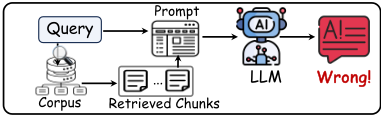
基于图的 RAG
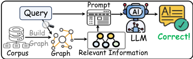
源代码、数据和/或其他相关材料已发布于 https://github.com/JayLZhou/GraphRAG。
诸如 GPT-4 [1]、Qwen2.5 [93] 和 Llama 3.1 [15] 等大语言模型（Large Language Models, LLMs）的发展在人工智能领域引发了一场革命 [23, 32, 48, 57, 66, 86, 87, 101]。尽管 LLM 具有卓越的理解与生成能力，但由于缺乏领域特定知识、实时更新的信息以及专有知识——这些内容均不在 LLM 的预训练语料库范围之内——LLM 仍可能生成错误的输出，这种现象被称为“幻觉”（hallucination）[70]。
为弥合这一差距，检索增强生成（Retrieval Augmented Generation, RAG）技术 [19, 22, 31, 33, 90, 95, 99] 被提出，该技术通过外部知识对 LLM 进行补充，以提升其事实准确性与可信度。给定用户查询 𝑄，朴素 RAG [43]（即原生 RAG）的核心思想是从外部语料库中检索相关文本块，然后将它们连同 𝑄 一起输入
香港中文大学（深圳），中国 youransun@link.cuhk.edu.cn
香港中文大学（深圳），中国 123090163@link.cuhk.edu.cn
华为云计算
技术有限公司
liuxilin3@huawei.com
基于图的检索增强生成（Graph-based Retrieval-Augmented Generation, RAG）已被证明能够有效地将外部知识融入大语言模型（LLM），从而提升其事实准确性、适应性、可解释性和可信度。文献中已提出了许多基于图的 RAG 方法。然而，这些方法尚未在相同的实验设置下得到系统而全面的比较。在本文中，我们首先从高层视角总结了一个统一框架，以涵盖所有基于图的 RAG 方法。随后，我们在一系列问答（QA）数据集上——从具体问题到抽象问题——对代表性的基于图的 RAG 方法进行了广泛比较，并检验了所有方法的有效性，从而对基于图的 RAG 方法进行了透彻分析。作为实验分析的附带成果，我们还通过组合现有技术，分别在具体问答（QA）任务和抽象问答任务上识别出了基于图的 RAG 方法的新变体，其性能超越了当前最先进的方法。最后，基于这些发现，我们提出了富有前景的研究机会。
我们相信，对现有方法行为的更深入理解能够为未来研究提供新的宝贵见解。
Yingli Zhou, Yaodong Su, Youran Sun, Shu Wang, Taotao Wang, Runyuan He, Yongwei Zhang, Sicong Liang, Xilin Liu, Yuchi Ma, and Yixiang Fang. In-depth Analysis of Graph-based RAG in a Unified Framework. PVLDB, 18(13): 5623 - 5637, 2025.
∗ Yixiang Fang is the corresponding author.
This work is licensed under the Creative Commons BY-NC-ND 4.0 International License. Visit https://creativecommons.org/licenses/by-nc-nd/4.0/ to view a copy of this license. For any use beyond those covered by this license, obtain permission by emailing info@vldb.org. Copyright is held by the owner/author(s). Publication rights licensed to the VLDB Endowment.
Proceedings of the VLDB Endowment, Vol. 18, No. 13 ISSN 2150-8097.
| Method | Graph Type | Index Component | Retrieval Primitive | Retrieval Granularity | Specific QA | Abstract QA |
|---|---|---|---|---|---|---|
| RAPTOR [75] | Tree | Tree node | Question vector | Tree node | ✓ | ✓ |
| KGP [88] | Passage Graph | Entity | Question | Chunk | ✓ | ✗ |
| HippoRAG [26] | Knowledge Graph | Entity | Entities in question | Chunk | ✓ | ✗ |
| G-retriever [30] | Knowledge Graph | Entity, Relationship | Question vector | Subgraph | ✓ | ✗ |
| ToG [80] | Knowledge Graph | Entity, Relationship | Question | Subgraph | ✓ | ✗ |
| DALK [45] | Knowledge Graph | Entity | Entities in question | Subgraph | ✓ | ✗ |
| LGraphRAG [16] | Textual Knowledge Graph | Entity, Community | Question vector | Entity, Relationship, Chunk, Community | ✓ | ✗ |
| GGraphRAG [16] | Textual Knowledge Graph | Community | Question vector | Community | ✗ | ✓ |
| FastGraphRAG [20] | Textual Knowledge Graph | Entity | Entities in question | Entity, Relationship, Chunk | ✓ | ✓ |
| LLightRAG [25] | Rich Knowledge Graph | Entity, Relationship | Low-level keywords in question | Entity, Relationship, Chunk | ✓ | ✓ |
| GLightRAG [25] | Rich Knowledge Graph | Entity, Relationship | High-level keywords in question | Entity, Relationship, Chunk | ✓ | ✓ |
| HLightRAG [25] | Rich Knowledge Graph | Entity, Relationship | Both high- and low-level keywords | Entity, Relationship, Chunk | ✓ | ✓ |
| Method | Graph Type | Index Component | Retrieval Primitive | Retrieval Granularity | Specific QA | Abstract QA |
as a prompt into LLM to generate answers. Consequently, RAG techniques have been widely applied in various fields, especially in domains where LLMs need to generate reliable outputs, such as healthcare [57, 86, 101], finance [48, 66], and education [23, 87]. Moreover, RAG has proven highly useful in many data management tasks, including NL2SQL [17, 44], data cleaning [18, 46, 62, 73], knob tuning [24, 42], DBMS diagnosis [77, 102, 103], and SQL rewrite [50, 81]. In turn, the database community has recently begun to actively explore how to build efficient and reliable RAG systems [2, 37]. Due to the important role of the RAG technique in LLM-based applications, numerous RAG methods have been proposed in the past year [31, 47]. Among these methods, the state-of-the-art RAG approaches typically use the graph data as the external data (also called graph-based RAG), since they capture the rich semantic information and link relationships between entities. Unlike vanilla RAG, graph-based RAG methods retrieve relevant information related to the query 𝑄 -such as nodes, relationships, or subgraphs-from the graph, and then incorporate this information into the prompt along with 𝑄 for the LLM to generate an answer. The overview of naive-based RAG and graph-based RAG is shown in Figure 1.
近年来，若干主流数据库系统已开始支持基于图的 RAG，包括 PostgreSQL [71]、Neo4j [65] 和 Databricks [12]。与此同时，基于图的 RAG 已成为现代图原生智能体系统的核心组件，例如 LangGraph [41] 和 Chat2Graph [6]。在基于图的 RAG 取得成功之后，来自数据库、数据挖掘、机器学习和自然语言处理等领域的研究人员设计了高效且有效的基于图的 RAG 方法 [10, 16, 25, 26, 34, 45, 49, 70, 75, 88, 89, 91, 96, 105]。在表 1 中，我们依据这些方法所依赖的图类型、索引组件、检索原语与粒度以及所支持的任务类型，总结了 12 种具有代表性的基于图的 RAG 方法的关键特征。经过仔细的文献调研，我们得出以下观察结果。首先，此前尚无工作提出统一框架来抽象基于图的 RAG 解决方案并识别关键性能因素。其次，现有工作侧重于评估整体性能，而非各个单独的组件。第三，目前尚缺乏在准确率和效率方面对所有这些方法进行的全面比较。
我们的工作。为解决上述问题，本文对基于图的 RAG 方法开展了深入研究。我们首先总结了一个包含四个阶段的新型统一框架，即 ❶ 图构建（Graph building）、❷ 索引构建（Index construction）、❸ 算子配置（Operator configuration）和 ❹ 检索与生成（Retrieval & generation），该框架涵盖了所有现有方法的核心思想。在该框架下，我们系统地比较了 12 种现有的具有代表性的基于图的 RAG 方法。我们在广泛使用的问答（QA）数据集上进行了全面实验，涵盖具体问题和抽象问题，评估了这些方法在处理多样化查询类型方面的有效性，并给出了深入分析。
总之，我们的主要贡献如下。
本文其余部分的组织结构如下。第 2 节介绍预备知识，第 3 节介绍一种面向基于图的 RAG 解决方案的新型统一框架。第 4 至 6 节在我们的统一框架下对基于图的 RAG 方法进行比较。第 7 节报告全面的实验结果与分析。第 9 节回顾相关工作，第 10 节总结全文。
在本节中，我们回顾大语言模型（LLM）的一些关键概念以及基于图的 RAG 方法的通用工作流程。
我们介绍大语言模型（LLM）的一些基本概念，包括 LLM 提示（prompting）与检索增强生成（RAG）。
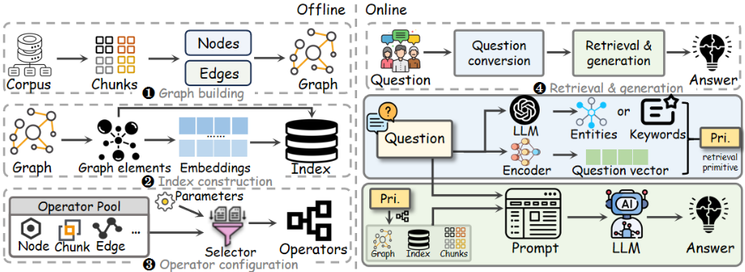
LLM 提示。在大规模人类交互场景语料库上进行指令微调（instruction tuning）后，LLM 能够遵循人类指令完成不同任务 [14, 67]。具体而言，给定任务输入，我们构建一个提示（prompt），其中封装了全面的任务描述。LLM 处理该提示以完成任务并生成相应的输出。值得注意的是，在数万亿字节数据上的预训练使 LLM 能够仅通过调整提示即可泛化到多样化的任务 [67]。
检索增强生成。在通过提示完成任务的过程中，LLM 常常生成错误或无意义的响应，即幻觉（hallucination）问题 [32]。为缓解该问题，RAG 作为一种先进的 LLM 提示技术被采用，其通过利用外部语料库中的知识，通常包括两个主要步骤 [22]：(1) 检索（retrieval）：给定用户问题 𝑄，利用索引检索与 𝑄 最相关（即 top𝑘）的文本块（chunks），其中大语料库首先被切分为更小的文本块；以及 (2) 生成（generation）：引导 LLM 以检索到的文本块连同 𝑄 作为提示来生成答案。
与基础 RAG（vanilla RAG）不同，基于图的 RAG 方法采用由外部语料库构建的图结构，以增强 LLM 的上下文理解能力，并生成信息更充分、更准确的回答 [70]。通常，基于图的 RAG 方法由三个主要阶段组成：(1) 图构建（graph building）：给定包含 𝑑 个文本块的大型语料库 D，对于每个文本块，由 LLM 提取节点和边，再将它们组合起来构建图 G；(2) 检索（retrieval）：给定用户问题 𝑄，利用索引从 G 中检索最相关的信息（例如节点或子图）；以及 (3) 生成（generation）：引导 LLM 将检索到的信息连同 𝑄 一起纳入提示中，从而生成答案。
图构建阶段旨在将输入语料库转换为图，它是基于图的检索增强生成（RAG）方法中的基础组件。在构建图之前，首先将语料库分割成更小的文本块（chunk）。然后，使用大语言模型（LLM）或其他工具基于这些文本块构建节点和边，如图 2 ❶ 所示。我们注意到，这一预处理步骤对所有 RAG 方法而言都是必不可少的。
更多细节见我们的技术报告 [74]。共有五种类型的图，每种图都有相应的构建方法；下面我们简要介绍每种图的类型及其构建方法：
❶ 段落图（Passage Graph）。在段落图（PG）中，每个文本块表示一个节点，边由实体链接工具 [88] 构建。如果两个文本块所包含的相同实体数量超过某个阈值，我们就为这两个节点之间连一条边。
❷ 树（Tree）。树采用渐进的方式构建，其中每个文本块表示树中的一个叶节点。然后，使用 LLM 生成更高层级的节点。具体而言，在第 𝑖 层，第 (𝑖+1) 层的节点是通过对第 𝑖 层中尚无父节点的节点进行聚类而创建的。对于每个包含超过两个节点的簇，LLM 会生成一个虚拟父节点，该节点带有对其子节点描述的高层次摘要。
❸ 知识图谱（Knowledge Graph）。知识图谱（KG）通过从每个文本块中抽取实体和关系来构建，其中每个实体表示一个对象，关系表示两个实体之间的语义关系。
❹ 文本知识图谱（Textual Knowledge Graph）。文本知识图谱（TKG）是一种特殊的 KG（采用与 KG 相同的构建步骤），其关键区别在于：TKG 中的每个实体和关系都被赋予一段简短的文本描述。
❺ 丰富知识图谱（Rich Knowledge Graph）。丰富知识图谱（RKG）是 TKG 的扩展版本，包含更多信息，包括实体和关系的文本描述，以及关系的关键词。我们在表 2 中总结了每种图类型的关键特征，综合考虑了它们所包含的属性（例如是否包含实体名称和描述）、构建所需的时间和 token 数量、最终所得图的规模，以及每种图所含信息的丰富程度。此外，我们在图 3 中提供了一个案例研究，展示如何从外部语料库构建这五种类型的图。详细描述见我们的技术报告 [74]。
在本节中，我们探讨基于图的 RAG 方法中的关键步骤，即选择算子，并使用它们来检索与问题 𝑄 相关的信息。
在本小节中，我们证明各种基于图的检索增强生成（RAG）方法的检索阶段可以抽象为模块化的算子序列。不同的方法以各自不同的方式选择和组合这些算子，从而实现灵活且可扩展的检索流水线。通过系统地分析现有的基于图的 RAG 实现，我们识别出一套完整的 19 个检索算子，并根据检索粒度将这些算子划分为五类。我们注意到，大多数算子源自原始论文中所描述的设计——尽管这些设计通常没有命名——因此我们为它们赋予了有意义且一致的名称。对于其余在文献中未明确定义的算子，我们基于源代码分析对其进行提取和总结。重要的是，通过以不同的序列选择和排列这些算子，所有现有的（以及潜在的未来的）基于图的 RAG 方法都可以得以实现。
| Graph Tree | Entity Name ✗ | Entity Type ✗ | Entity Description ✗ | Relationship Name ✗ | Relationship Keyword ✗ | Relationship Description ✗ | Edge Weight ✗ | Token Consuming ★ | Graph Size ★ | Information Richness ★★ | Construction Time ★ |
|---|
| Graph Tree | Entity Name ✗ | Entity Type ✗ | Entity Description ✗ | Relationship Name ✗ | Relationship Keyword ✗ | Relationship Description ✗ | Edge Weight ✗ | Token Consuming ★ | Graph Size ★ | Information Richness ★★ | Construction Time ★ |
PG
★
★★★★★
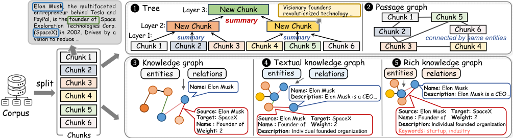
| Method | Node | Relationship | Chunk | Subgraph | Community |
|---|---|---|---|---|---|
| RAPTOR | VDB | N/A | N/A | N/A | N/A |
| KGP | TF-IDF | N/A | N/A | N/A | N/A |
| HippoRAG | Link + PPR | Aggregator | Aggregator | N/A | N/A |
| G-retriever | VDB | VDB | N/A | Steiner | N/A |
| ToG | Link + Onehop + Agent | Onehop + Agent | N/A | N/A | N/A |
| DALK | Link + Onehop + Agent | N/A | N/A | KhopPath + AgentPath | N/A |
| FastGraphRAG | Link + VDB + PPR | Aggregator | Aggregator | N/A | N/A |
| LGraphRAG | VDB | Onehop | Occurrence | N/A | Entity |
| RGraphRAG | N/A | N/A | N/A | N/A | Layer |
| LLightRAG | VDB | Onehop | Occurrence | N/A | N/A |
| GLightRAG | FromRel | VDB | FromRel | N/A | N/A |
| HLightRAG | VDB + FromRel | Onehop + VDB | Occurrence + FromRel | N/A | N/A |
| Method | Node | Relationship | Chunk | Subgraph | Community |
交互。具体而言，每条关系的得分是通过将其所连接的两个实体的得分相加而得到的。因此，可以选出 top𝑘 条相关关系。Agent 算子的关键区别在于，它不使用候选实体列表，而是使用候选关系列表，从而使大语言模型（LLM）能够根据问题选出最相关的关系。
对于每条关系，我们识别与其关联的两个实体。如果这两个实体出现在同一个 chunk 中，则该 chunk 的得分加 1。在处理完所有关系后，选出得分最高的 top𝑘 个 chunk。
树 [28]。❸ AgentPath 算子旨在通过使用 LLM 过滤掉无关路径，识别出与给定问题最相关的 𝑘-hop 路径。
· 社区类型。只有 LGraphRAG 和 GGraphRAG 使用了社区算子，该类算子包含两个具体的算子：❶ Entity 和 ❷ Layer。该算子首先识别包含指定实体的社区，每个社区维护一个关联的实体列表；然后根据 LLM 所赋予的相关性得分对选出的社区进行排序，返回得分最高的 top𝑘 个社区。每个社区都关联一个 layer 属性，Layer 算子检索位于指定层及以下的所有社区。
在我们的统一框架下，任何现有的基于图的 RAG 方法都可以通过利用算子池并结合特定的方法参数 P 来实现，如图 2 ❸ 所示。相反，P 充当一个控制模块，通过确定以下内容来为给定的基于图的 RAG 方法配置检索流水线：(1) 该方法中应使用哪些原子算子；以及 (2) 这些算子在检索过程中的执行顺序。
在表 3 中，我们展示了现有的基于图的 RAG 方法如何利用我们提供的算子来组装其检索阶段。例如，LLightRAG 首先应用 VDB 算子来检索相关节点，然后使用 Onehop 算子来检索相关关系，最后采用 Occurrence 算子来获取相关文本块。在上述示例中，我们可以设置 P = ⟨ VDB , Onehop , Occurrence ⟩ 。本质上，参数 P 表示一种检索配置，用于区分每个特定基于图的 RAG 方法的检索阶段。由于对所有基于图的 RAG 方法进行了这种独立且模块化的分解，我们不仅能够更深入地理解这些方法的工作方式，还获得了灵活组合这些算子以创建新方法的能力。此外，还可以轻松地创建新算子，例如，我们可以在社区类型中创建一个新的算子 VDB，该算子使我们能够通过向量搜索来比较问题与社区之间的语义相似度，从而检索出最相关的社区。在我们后续的实验结果中（参见第 7.3 节中的 Exp.5），得益于我们的模块化设计，我们可以通过首先创建两个新算子并将它们与现有算子相结合，设计出一种新的最先进的 RAG 方法。
在检索与生成（Retrieval & generation）阶段，基于图的 RAG 方法首先经过一个问题转换（Question conversion）阶段（见图 2 右侧的第二个子图），该阶段旨在将用户输入的问题 𝑄 转换为检索原语 D，其中 D 表示原子检索单元，例如 𝑄 中的实体或关键词，以及 𝑄 的嵌入向量。
在问题转换阶段，DALK、HippoRAG 和 ToG 从问题中提取实体；KGP 直接使用原始问题作为检索原语。LightRAG 的三个版本从问题中提取关键词作为检索原语，其余方法则使用 𝑄 的嵌入向量。
基于检索原语 D 和所选的算子，检索出与 𝑄 最相关的信息，并将其与
| Dataset | # of Tokens | # of Questions | # of Chunks | QA Type |
|---|---|---|---|---|
| MultihopQA | 1,434,889 | 2,556 | 609 | Specific QA |
| Quality | 1,522,566 | 4,609 | 265 | Specific QA |
| PopQA | 2,630,554 | 1,172 | 33,595 | Specific QA |
| MusiqueQA | 3,280,174 | 3,000 | 29,898 | Specific QA |
| HotpotQA | 8,495,056 | 3,702 | 66,581 | Specific QA |
| ALCE | 13,490,670 | 948 | 89,562 | Specific QA |
| Mix | 611,602 | 125 | 61 | Abstract QA |
| MultihopSum | 1,434,889 | 125 | 609 | Abstract QA |
| Agriculture | 1,949,584 | 125 | 12 | Abstract QA |
| CS | 2,047,923 | 125 | 10 | Abstract QA |
| Legal | 4,774,255 | 125 | 94 | Abstract QA |
| Dataset | # of Tokens | # of Questions | # of Chunks | QA Type |
𝑄 相结合，构成用于 LLM 响应生成的最终提示。一般而言，答案生成范式有两种类型：❶ 直接生成（Directly）和 ❷ Map-Reduce。前者直接利用 LLM 生成答案。GGraphRAG 中的 Map-Reduce 策略提示 LLM 从每个检索到的社区生成部分答案和置信度分数。这些（答案，分数）对经过排序后，将排名靠前的若干对拼接起来，形成用于答案生成的最终提示。一个示例见 [74]。
我们现在给出实验结果。第 7.1 节讨论实验设置。我们分别在 7.2 节和 7.3 节中讨论特定问答（specific QA）与抽象问答（abstract QA）任务的结果。
Workflow of our evaluation. We present the first open-source testbed for graph-based RAG methods, which (1) collects and reimplements 12 representative methods within a unified framework (as depicted in Section 3). (2) supports a fine-grained comparison over the building blocks of the retrieval stage with up to 100+ variants, and (3) provides a comprehensive evaluation over 11 datasets with various metrics in different scenarios. We summarize the workflow of our empirical study in [74].
Benchmark Dataset. We employ 11 widely used real-world datasets [16, 25, 26, 33] to evaluate the performance of each graphbased RAG method. These datasets span various corpus domains and cover diverse task types.
| Method.Method | MultihopQA.Accuracy | MultihopQA.Recall | Quality.Accuracy | PopQA.Accuracy | PopQA.Recall | MusiqueQA.Accuracy | MusiqueQA.Recall | HotpotQA.Accuracy | HotpotQA.Recall | ALCE.STRREC | ALCE.STREM | ALCE.STRHIT |
|---|---|---|---|---|---|---|---|---|---|---|---|---|
| ZeroShot | 49.022 | 34.256 | 37.058 | 28.592 | 8.263 | 1.833 | 5.072 | 35.467 | 42.407 57.745 | 15.454 34.283 | 3.692 11.181 | 30.696 63.608 |
| VanillaRAG | 50.626 | 36.918 | 39.141 | 60.829 | 27.058 | 17.233 | 27.874 | 50.783 | - | 9.754 | 2.215 | 19.726 |
| G-retriever ToG | 42.019 41.941 | 43.116 38.435 | 31.807 34.888 | 17.084 47.677 | 6.075 23.727 | 2.733 9.367 | 11.662 20.536 | - - | - | 13.975 | 3.059 | 29.114 |
| KGP | 48.161 | 36.272 | 33.955 | 57.255 | 24.635 | 17.333 | 27.572 | - | - | 27.692 | 8.755 | 51.899 |
| DALK | 53.952 | 47.232 | 34.251 | 45.604 | 19.159 | 11.367 | 22.484 | 33.252 | 47.232 | 21.408 | 4.114 | 44.937 |
| LLightRAG | 44.053 | 35.528 | 34.780 | 38.885 | 16.764 | 9.667 | 19.810 | 34.144 | 41.811 | 21.937 | 5.591 | 43.776 |
| GLightRAG | 48.474 | 38.365 | 8.146 | 7.267 | 17.204 | 25.581 | 33.297 | 17.859 | 3.587 | 37.131 | ||
| HLightRAG | 50.313 | 41.613 | 33.413 34.368 | 20.944 41.244 | 18.071 | 11.000 | 21.143 | 35.647 | 43.334 | 25.578 | 6.540 | 50.422 |
| FastGraphRAG | 52.895 | 44.278 | 37.275 | 53.324 | 22.433 | 13.633 | 24.470 | 43.193 | 51.007 | 30.190 | 8.544 | 56.962 |
| HippoRAG | 53.760 | 47.671 | 48.297 | 59.900 | 24.946 | 17.000 | 28.117 | 50.324 | 58.860 | 23.357 | 6.962 | 43.671 |
| LGraphRAG | 55.360 | 50.429 | 37.036 | 45.461 | 18.657 | 12.467 | 23.996 | 33.063 | 42.691 | 28.448 | 8.544 | 54.747 |
| RAPTOR | 56.064 | 44.832 | 56.997 | 62.545 | 27.304 | 24.133 † | 35.595 † | 55.321 † | 62.424 † | 35.255 † | 11.076 † | 65.401 † |
| Method.Method | MultihopQA.Accuracy | MultihopQA.Recall | Quality.Accuracy | PopQA.Accuracy | PopQA.Recall | MusiqueQA.Accuracy | MusiqueQA.Recall | HotpotQA.Accuracy | HotpotQA.Recall | ALCE.STRREC | ALCE.STREM | ALCE.STRHIT |
dataset contents, including five datasets: Mix [72], MultihopSum [82], Agriculture [72], CS [72], and Legal [72].
Their statistics, including the numbers of tokens, and questions, and the question-answering (QA) types are reported in Table 4. For specific (both complex and simple) QA datasets, we use the questions provided by each dataset. While for abstract QA datasets, We follow the question generation method introduced in [16], using GPT-4o to generate 125 questions per dataset with controlled difficulty, which is also aligned with existing works [16, 20, 25, 70]. The details and prompt template used for question generation are provided in our technical report [74]. Note that MultihopQA and MultihopSum originate from the same source, but differ in the types of questions they include-the former focuses on complex QA tasks, while the latter on abstract QA tasks.
Evaluation Metric. For the specific QA tasks, we use Accuracy and Recall to evaluate performance on the first five datasets based on whether gold answers are included in the generations instead of strictly requiring exact matching, following [60, 76]. For the ALCE dataset, answers are typically full sentences rather than specific options or words. Following existing works [21, 75], we use string recall (STRREC), string exact matching (STREM), and string hit (STRHIT) as evaluation metrics. For abstract QA tasks, we adopt four evaluation metrics following prior works [16, 25]: Comprehensiveness, Diversity, Empowerment, and Overall, which assess answer quality from different perspectives. We employ a head-to-head comparison strategy using GPT-4o as the evaluator. Specifically, for each pair of answers, the LLM is prompted to judge which one is better with respect to a given metric, rather than assigning explicit scores. This comparative approach is motivated by the strong performance of LLMs as evaluators of natural language generation, often matching or exceeding human judgments [85, 100]. We provide detailed descriptions of the evaluation protocol and example case studies for all four metrics in our technical report [74].
在本节中，我们评估了不同方法在特定问答（QA）任务上的性能。
实验1（Exp.1）：总体性能。我们在表5中报告了所有算法在特定 QA 任务上的指标值。可以得出以下观察与分析：（1）总体而言，检索增强生成（RAG）技术在所有数据集上都显著提升了大语言模型（LLM）的性能，而基于图的 RAG 方法（例如 HippoRAG 和 RAPTOR）通常表现出比 VanillaRAG 更高的准确率。然而，如果检索到的元素与给定问题不相关，RAG 反而可能降低 LLM 的准确率。例如，在 Quality 数据集上，与 Zeroshot 相比，RAPTOR 将准确率提升了 53.80%，而 G-retriever 则使其下降了 14.17%。这主要是因为，对于简单的 QA 任务，仅提供子图中的实体和关系不足以有效地回答此类问题。
（2）对于特定 QA 任务而言，保留原始文本块（text chunks）对准确回答问题至关重要，因为这些数据集中的问题和答案均源自文本语料库。这或许可以解释为什么仅依赖图结构信息的 G-retriever、ToG 和 DALK 在大多数数据集上表现不佳。然而，在需要多跳推理（multi-hop reasoning）的 MultihopQA 数据集上，DALK 能够有效检索到相关的推理路径，其准确率和召回率分别比 VanillaRAG 提升了 6.57% 和 27.94%。
（3）如果数据集已由专家标注者预先切分为文本块，VanillaRAG 的表现通常优于其在基于 token 大小进行切分的数据集上的表现，我们将在技术报告 [74] 中对这一现象作进一步研究。
（4）RAPTOR 在大多数数据集上往往能取得最佳性能，尤其是对于简单问题。对于复杂问题，RAPTOR 同样表现极为出色。这主要是因为，对于此类问题，高层次的摘要信息对于理解跨多个文本块的潜在关系至关重要。因此，正如我们将看到的，LGraphRAG 有望取得类似的结果，因为它同样融合了高层次信息（即针对给定问题的最相关社区（community）的摘要报告）。然而，我们仅在 MultihopQA 数据集上观察到这一效果。对于另外两个复杂 QA 数据集，LGraphRAG 的表现甚至不如 VanillaRAG。与此同时，RAPTOR 在这两个数据集上仍然取得了最佳性能。我们推测，这种差异源于高层次信息检索方式的不同（见表3）。
(5) 对于三个最大的数据集，基于 K-means [28] 的 RAPTOR（记为 RAPTOR-K）同样表现出色。这表明 RAPTOR 中所使用的聚类方法仅对整体性能产生影响。这可能是因为不同的聚类方法共享相同的核心思想：将相似的条目归入同一簇。因此，它们可能生成相似的文本块簇。我们注意到，RAPTOR-K 取得了与 RAPTOR 相当甚至更好的性能，详细结果见技术报告 [74]。如果 RAPTOR 未能在两天内完成图的构建，我们则改用 RAPTOR-K。
评注。我们注意到，并非所有基于图的检索增强生成（RAG）方法都能在每个问题上持续优于基线 VanillaRAG。通过仔细分析表现最优方法的失败案例，我们考察了 HippoRAG、RAPTOR 和 LGraphRAG 为何有时在特定问答（QA）任务中表现不佳。失败案例请参见 [74]。
Exp.2. 图与索引构建的 token 开销。在本实验中，我们首先报告在所有数据集上构建四类图的 token 开销。值得注意的是，构建 PG 不产生任何 token 开销，因为它不依赖大语言模型（LLM）进行图构建。我们在此仅报告四个数据集上的结果，其余结果见我们的技术报告 [74]。如图 4(a) 至 (d) 所示，我们观察到以下几点：(1) 构建树始终需要最少的 token 开销，而 TKG 和 RKG 产生的 token 开销最高，其中 RKG 略高于 TKG。在某些情况下，RKG 所需的 token 最多可达树的 40 倍。(2) KG 介于这两个极端之间，其所需 token 多于树但少于 TKG 和 RKG。这一趋势与表 2 中的结果一致，即属性越多的图在构建时需要越高的 token 开销。(3) 回顾一下，一次 LLM 调用的 token 开销由两部分组成：提示（prompt）token，即用于提供输入的 token；以及补全（completion）部分，即包含模型作为响应所生成的 token。可以看到，无论图的类型如何，提示部分产生的 token 开销始终高于补全部分；详细结果见 [74]。
| Method.Method | MultihopQA.time | MultihopQA.token | PopQA.time | PopQA.token | ALCE.time | ALCE.token |
|---|---|---|---|---|---|---|
| ZeroShot | 3.23 s | 270.3 | 1.17 s | 82.2 | 2.41 s | 177.2 |
| VanillaRAG | 2.35 s | 3623.4 | 1.41 s | 644.1 | 1.04 s | 849.1 |
| G-retriever | 6.87 s | 1250 | 37.51 s | 3684.5 | 101.16 s | 5096.1 |
| ToG | 69.74 s | 16859.6 | 42.02 s | 11224.2 | 34.94 s | 11383.2 |
| KGP | 38.86 s | 13872.2 | 37.49 s | 6738.9 | 105.09 s | 9326.6 |
| DALK | 28.03 s | 4691.5 | 16.33 s | 2496.5 | 17.04 s | 4071.9 |
| LLightRAG | 19.28 s | 5774.1 | 10.71 s | 2447.5 | 10.34 s | 4427.9 |
| GLightRAG | 18.37 s | 5951.5 | 12.10 s | 3255.6 | 13.02 s | 4028.1 |
| HLightRAG | 19.31 s | 7163.2 | 17.71 s | 5075.8 | 16.55 s | 6232.3 |
| FastGraphRAG | 7.17 s | 5874.8 | 13.25 s | 6157 | 25.82 s | 6010.9 |
| HippoRAG | 3.46 s | 3261.1 | 2.32 s | 721.3 | 2.94 s | 858.2 |
| LGraphRAG | 2.98 s | 6154.9 | 1.72 s | 4325.2 | 2.11 s | 5441.1 |
| RAPTOR | 3.18 s | 3210 | 1.36 s | 1188.3 | 1.54 s | 793.6 |
| Method.Method | MultihopQA.time | MultihopQA.token | PopQA.time | PopQA.token | ALCE.time | ALCE.token |
随后，我们考察在所有数据集上构建索引的 token 开销。由于只有 LGraphRAG 和 GGraphRAG 需要使用 LLM 进行索引构建，我们在图 5 中仅报告生成社区报告的 token 开销。可以看到，索引构建的 token 开销与构建 TKG 的开销几乎相同。这主要是因为它需要为每个社区生成一份报告，而社区的数量通常很大，尤其是在大型数据集中。例如，HotpotQA 数据集包含 57,384 个社区，显著增加了整体 token 消耗。也就是说，在大型数据集上，两个版本的 GraphRAG 在离线阶段往往比其他方法消耗更多的 token。
Exp.3. Evaluation of the generation costs. In this experiment, we evaluate the time and token costs for each method in specific QA tasks. Specifically, we report the average time and token costs for each query across all datasets in Table 6. We only report the results on three datasets here, and leave the remaining results in [74]. It is not surprising that ZeroShot and VanillaRAG are the most cost-efficient methods in terms of both time and token consumption. In terms of token cost, RAPTOR and HippoRAG are generally more efficient than other graph-based RAG methods, as they share a similar retrieval stage with VanillaRAG . The main difference lies in the chunk retrieval operators they use. Besides, KGP and ToG are the most expensive methods, as they rely on the agents (i.e., different roles of the LLM) for information retrieval during prompt construction. The former utilizes the LLM to reason the next required information based on the original question and retrieved chunks, while the latter employs LLM to select relevant entities and relationships for answering the question. On the other hand, the costs of LLightRAG , GLightRAG , and HLightRAG gradually increase, aligning with the fact that more information is incorporated into the prompt construction. All three methods are more expensive than LGraphRAG in specific QA tasks, as they use LLM to extract keywords in advance. Moreover, the time cost of all methods is proportional to the completion token cost. We present the results in our technical report [74], which explains why in some datasets, VanillaRAG is even faster than ZeroShot .
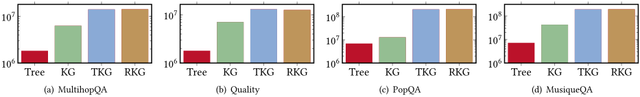
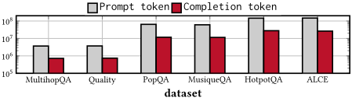
Exp.4. Detailed analysis for RAPTOR and LGraphRAG . Due to space limitations, we highlight only the key insights derived from our analysis of RAPTOR and LGraphRAG . First, RAPTOR reveals that a significantly higher proportion of retrieved high-level information (i.e., content from non-leaf nodes) appears in complex QA tasks compared to simple ones, suggesting that high-level information is crucial for multi-hop reasoning. Second, we find that community reports serve as more effective high-level information than the chunk summaries used in RAPTOR , and the similarity-driven community retrieval strategy proves more robust than the Entity operator employed in LGraphRAG . Finally, for multi-hop reasoning tasks like MultihopQA, entity and relationship information provide valuable auxiliary signals that help the LLM connect relevant facts and guide the reasoning process. The detailed analysis and respective experiment results are shown in [74].
实验5. 块大小的影响。我们通过将语料库切分为600、1200和2400个token的块（chunk），评估了块大小对所有用于特定QA的RAG方法的影响。为此，我们基于token长度对PopQA、HotpotQA和ALCE的完整语料库进行重新分块，构建了三个新数据集——PopAll、HotpotAll和ALCEAll。这一重新分块是必要的，因为这些数据集是由专家标注者预先切分的，可能无法准确反映块大小的影响。我们仅在表7中报告五种方法的结果，其余结果在[74]中给出。可以看出：(1) 对于简单QA数据集（例如PopAll和HotpotAll），较小的块大小通常能带来更好的性能。这是因为这类问题所需的信息往往在一两个块内即可直接获得，较小的块能够提供更聚焦、更精确的上下文，从而提高答案的准确性。(2) 我们注意到，简单QA任务的性能对块大小高度敏感，而复杂QA任务的性能在不同块大小下则保持相对稳定。这是因为复杂问题通常需要跨多个块进行推理，因而对单个块的粒度依赖较小。
实验6. 新的SOTA算法。基于上述分析，我们旨在为复杂QA数据集开发一种新的最先进（state-of-the-art）方法，记为VGraphRAG。具体而言，我们的算法首先检索top𝑘个实体及其对应的关系，这一步与LGraphRAG相同。接下来，我们采用基于向量搜索的检索策略来选择最相关的社区和块。然后，通过组合上述四个要素，我们构建了本方法的最终提示（prompt），以有效引导LLM生成准确的答案。结果同样如表8所示，可以看出，VGraphRAG在所有复杂QA数据集上均表现最佳。例如，与RAPTOR相比，我们的新算法VGraphRAG在MultihopQA数据集和MusiqueQA数据集上分别将Accuracy提升了6.42%和11.6%。
实验7：LLM骨干网络的影响。我们在MultihopQA和ALCEAll数据集上评估了不同LLM骨干网络的影响，包括Llama-3-8B [15]、Qwen-2.5-32B [92]、Llama-3-70B [15]和GPT-4o-mini。主要结果如表9所示，其余部分在[74]中给出。我们得到以下观察：(1) 更强的模型通常能带来更好的性能，尤其是在Zero-shot设置下，该设置最直接地反映了底层LLM的固有能力。(2) LightRAG的三个变体LLightRAG、GLightRAG和HLightRAG以及LGraphRAG在使用更强大的LLM时取得了显著的性能提升。这可以归因于它们对富知识图谱（Rich Knowledge Graphs）和文本知识图谱（Textual Knowledge Graphs）的依赖，更强的LLM有助于构建更高质量的图谱。(3) 与其他LLM骨干网络相比，HippoRAG在使用GPT-4o-mini时表现出明显更优的性能。我们将此归因于GPT-4o-mini能够从问题中提取更准确的实体并构建更高质量的知识图谱，从而提升了相关文本块（chunks）的检索效果和最终答案的准确性。(4) 无论使用何种LLM骨干网络，我们提出的方法VGraphRAG始终取得最佳性能，这证明了我们所提出的统一框架的优势。
实验1：整体性能。我们通过呈现两两对比的胜率百分比来评估支持抽象问答（abstract QA）的方法的性能（见表1），即将每个行方法与每个列方法的性能进行对比。在此，我们将 VR、RA、GS、LR 和 FG 分别表示为 VanillaRAG、RAPTOR、具有高层社区的 GGraphRAG（即该原始实现中为两层）、HLightRAG 和 FastGraphRAG。结果如图 6 至图 10 所示，我们可以看到：（1）基于图谱的 RAG 方法通常优于 VanillaRAG，主要原因是它们能够有效捕捉文本块（chunks）之间的相互联系。（2）在全部四项指标上，GGraphRAG 在所有指标上都表现突出。它通过利用社区级检索来减少碎片化的证据并捕捉更广泛的上下文，从而取得了最高的全面性（Comprehensiveness）。在多样性（Diversity）方面，RAPTOR 和 GGraphRAG 都表现良好，它们通过聚合跨聚类或跨社区的内容，覆盖了广泛的子主题。在赋能性（Empowerment）方面，GGraphRAG 和 LightRAG 领先，它们通过整合实体和关系等结构化元素，帮助大语言模型（LLM）生成更有依据、更具可操作性的答案。总体而言，GGraphRAG 始终排名第一，而 RAPTOR
| Method | Chunk. | Size | MultihopQA.Accuracy | Recall | PopAll.Accuracy | Recall | Accuracy | HotpotAll. | Recall | STRREC | ALCEAll. | STREM | STRHIT | |||||||||||||||||
|---|---|---|---|---|---|---|---|---|---|---|---|---|---|---|---|---|---|---|---|---|---|---|---|---|---|---|---|---|---|---|
| 600 | 54.421 | 42.740 | 57.255 | 24.171 | 49.190 | 56.935 | 30.174 | 8.333 | 57.911 | |||||||||||||||||||||
| VanillaRAG | 1,200 | 50.626 | 36.918 | 57.041 | 25.877 | 44.254 | 52.511 | 29.334 | 8.228 | 56.329 | ||||||||||||||||||||
| 2,400 | 50.665 | 37.172 | 47.677 | 19.122 | 27.553 | 34.293 | 26.350 | 7.490 | 51.371 | |||||||||||||||||||||
| 600 | 41.243 | 32.766 | 4.536 | |||||||||||||||||||||||||||
| DALK | 1,200 | 55.986 53.952 | 48.202 47.232 | 42.602 | 16.131 17.024 | 30.416 | 41.737 | 39.544 | 4.430 | 21.734 | 44.304 21.327 | 43.987 | ||||||||||||||||||
| 2,400 | 53.208 | 46.829 | 45.318 | 18.651 | 28.633 | 37.826 | 20.350 | 4.430 | 41.456 | |||||||||||||||||||||
| 600 | 47.144 | 41.210 | 62.401 | 26.892 | 50.783 | 58.454 | 27.025 | 8.122 | 51.477 | |||||||||||||||||||||
| 53.760 | 60.472 | 21.633 | 41.561 | |||||||||||||||||||||||||||
| HippoRAG | 47.671 | 55.267 | 5.696 | |||||||||||||||||||||||||||
| 1,200 | 46.601 | 25.041 | 45.624 | 62.862 | ||||||||||||||||||||||||||
| 2,400 | 52.152 | 46.267 | 50.751 | 26.292 | 19.986 | 41.194 | 53.597 | 26.477 | 10.971 | 6.118 | 52.848 | |||||||||||||||||||
| 600 1,200 | 55.282 55.360 | 50.429 | 53.181 | 17.998 | 30.686 | 49.801 38.824 | 33.692 27.785 | 8.017 | 62.447 52.954 | |||||||||||||||||||||
| LGraphRAG | 2,400 | 54.930 | 44.588 | 39.814 | 20.185 | 37.061 | 45.366 | 7.806 | ||||||||||||||||||||||
| 43.317 | 28.398 | 12.236 | 54.008 | |||||||||||||||||||||||||||
| 600 | 56.729 | 46.358 | 61.830 | 28.176 | 56.132 | 63.584 | 35.111 | 63.186 | ||||||||||||||||||||||
| RAPTOR | 1,200 56.064 44.832 47.963 21.399 31.983 39.864 34.044 10.971 62.342 2,400 56.299 44.610 48.177 21.289 31.983 39.122 33.432 10.654 61.181 | |||||||||||||||||||||||||||||
| VR | RA FG | GS | LR | VR | RA GS | LR FG | VR | RA | GS | LR | FG | VR | GS | RA | LR | FG | ||||||||||||||
| VR | 50 | 58 | 30 | 36 | 93 | VR | 50 | 66 58 | 35 90 | VR 50 | 60 | 29 28 | 92 | VR | 60 | 19 | 32 | 93 | 50 | |||||||||||
| RA | 42 | 50 | 39 | 26 | 82 | RA | 34 | 50 | 54 20 76 | RA 40 | 50 | 45 | 22 | 82 | RA | 40 | 50 | 44 | 24 | 82 | ||||||||||
| GS | 70 | 61 | 50 | 15 | 89 | GS | 42 | 46 50 | 26 86 | GS 71 | 54 | 50 | 12 | 88 | GS | 81 | 56 | 50 | 14 | 88 | ||||||||||
| LR | 50 | 98 | LR | 65 | 80 | 50 | 72 | 78 | 88 | 50 | 98 | LR | 68 | 76 | 86 | 50 | 98 | |||||||||||||
| 64 | 74 | 85 | 2 | 50 | FG | 74 | 96 | LR | 50 | FG | 7 | 2 | 50 | |||||||||||||||||
| FG | 7 18 11 (a) Comprehensiveness | 10 24 14 4 50 (b) Diversity FG 8 18 12 2 (c) Empowerment 18 12 (d) Overall results on Mix dataset. | ||||||||||||||||||||||||||||
| Figure 6: The abstract QA | ||||||||||||||||||||||||||||||
| VR | RA | GS | LR | FG | VR | RA | LR | VR | RA | GS | LR | FG | VR | LR | FG | |||||||||||||||
| GS | FG | GS | RA | |||||||||||||||||||||||||||
| VR | 50 | 2 | 46 | 95 | VR | 50 | 64 58 | 64 | 50 | 52 | 39 | 36 | 95 | VR | 50 | 52 | 44 | 46 | 95 | |||||||||||
| 50 | 47 | 48 | 94 | RA | 36 | 50 | 93 | VR RA | 48 | 45 | 45 | 93 | RA | 45 | 47 | 94 | ||||||||||||||
| RA | 50 | 50 | 50 | 79 | 96 | GS | 42 | 42 49 | 85 52 | 50 | 50 | 48 | 50 | 52 | 97 | |||||||||||||||
| GS | 78 | 53 | 50 | 55 50 | 92 | 64 | 54 | 41 | 50 | 50 | 97 55 | LR | 54 | GS 53 | 48 | 56 50 | GS | |||||||||||||
| LR FG | 54 5 | 52 6 50 | 21 4 | 8 | 92 FG 7 | LR | 36 15 | 51 48 8 12 | 50 88 50 | 61 | 55 5 | 59 | 95 3 | 6 3 7 | FG | 93 | 5 | 50 | 7 | LR FG | 50 | 5 | ||||||||
| (a) Comprehensiveness (b) Diversity (c) Empowerment (d) Overall | ||||||||||||||||||||||||||||||
| Figure 7: The abstract QA results on MultihopSum dataset. | ||||||||||||||||||||||||||||||
| VR | RA | GS | LR | VR | GS | LR FG | VR | RA | LR | FG | VR | LR | ||||||||||||||||||
| FG 85 | 50 | RA | 45 | RA GS 30 | 38 | 53 | FG | GS | ||||||||||||||||||||||
| VR | 39 | 54 | VR | 32 | 77 | 50 | VR | 59 | 24 | 50 | 85 | 41 | VR | 52 | 85 | |||||||||||||||
| RA GS LR FG | 50 68 61 46 15 (a) | 32 50 94 81 89 27 78 6 50 | 19 50 38 11 Comprehensiveness | 73 62 50 22 | RA GS 55 LR 41 FG 23 | 68 84 24 10 (b) | 50 16 50 63 37 50 18 29 Diversity | 76 90 82 71 50 | RA | 50 | 22 76 58 50 19 | 76 Empowerment | 50 42 9 | 50 16 76 84 50 62 24 38 50 5 10 21 (d) Overall | RA GS LR FG | 70 62 47 15 | 95 90 79 50 | 78 24 4 | GS LR FG | (c) | 96 91 81 50 | 59 48 15 |
| Method | | Chunk. | | Size | MultihopQA.Accuracy | | | Recall | PopAll.Accuracy | Recall | Accuracy | HotpotAll. | | Recall | STRREC | ALCEAll. | | STREM | | | STRHIT | | | | | | | | | |
| Dataset | Metric | LGraphRAG | RAPTOR | VGraphRAG |
|---|---|---|---|---|
| MultihopQA | Accuracy Recall | 55.360 50.429 | 56.064 44.832 | 59.664 50.893 |
| MusiqueQA | Accuracy Recall | 12.467 23.996 | 24.133 35.595 | 26.933 40.026 |
| ALCE | STRREC STREM STRHIT | 28.448 8.544 54.747 | 35.255 11.076 65.401 | 41.023 15.401 71.835 |
| Dataset | Metric | LGraphRAG | RAPTOR | VGraphRAG |
通常位居第二，这证明了高层级摘要的价值以及 Map-Reduce 的有效性。
实验2：生成成本的评估。在本实验中，我们展示了各方法在抽象问答任务中的时间和 token 开销。如表 10 所示，正如预期的那样，GGraphRAG 是成本最高的方法，而其他基于图谱的方法表现出相近的成本，尽管它们都比 VanillaRAG 更昂贵。例如，在 MutihopSum 数据集上，与 VanillaRAG 相比，GGraphRAG 每个查询所需的时间是 VanillaRAG 的 57 倍，消耗的 token 是 VanillaRAG 的 210 倍。具体而言，GGraphRAG 中的每个查询大约需要 9 分钟并消耗 300K 个 token，这使其在实际场景中不具实用性。这是因为，为了回答一个抽象问题，GGraphRAG 需要分析所有检索到的社区，这一过程极其耗时且消耗大量 token，尤其是在社区数量很大时（例如达到数千个）。
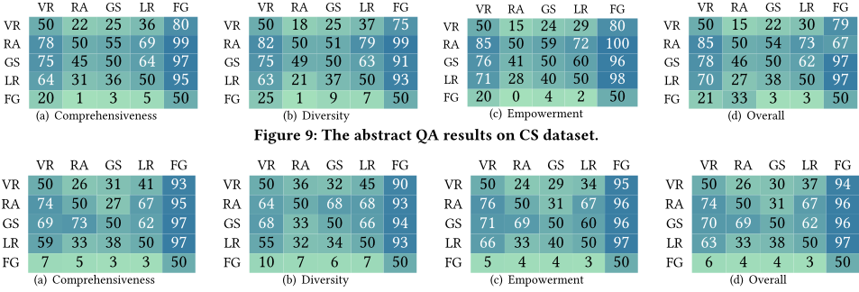
| Method.Method | LLM backbone.LLM backbone | MultihopQA.Accuracy | MultihopQA.Recall | ALCEAll.STRREC | ALCEAll.STREM | ALCEAll.STRHIT |
|---|---|---|---|---|---|---|
| Llama-3-8B | 49.022 | 34.256 | 15.454 | 3.692 | 30.696 | |
| Qwen-2.5-32B | 45.07 | 33.332 | 30.512 | 10.127 | 56.118 | |
| ZeroShot Llama-3-70B | 55.908 | 52.987 | 31.234 | 7.17 | 61.92 | |
| GPT-4o-mini | 59.546 | 48.322 | 34.965 | 10.232 | 66.245 | |
| Llama-3-8B | 50.626 | 36.918 | 29.334 | 8.228 | 56.329 | |
| Qwen-2.5-32B | 56.299 | 47.66 | 39.49 | 14.873 | 69.937 | |
| VanillaRAG Llama-3-70B | 56.768 | 49.127 | 34.961 | 9.81 | 68.038 | |
| GPT-4o-mini | 59.311 | 47.941 | 35.735 | 10.127 | 68.249 | |
| Llama-3-8B | 50.313 | 41.613 | 22.475 | 6.329 | 43.776 | |
| Qwen-2.5-32B | 53.678 | 51.403 | 34.168 | 10.971 | 63.819 | |
| HLightRAG Llama-3-70B | 57.081 | 54.51 | 29.548 | 8.228 | 57.911 | |
| GPT-4o-mini | 55.829 | 46.424 | 41.334 | 15.506 | 71.73 | |
| Llama-3-8B | 53.76 | 47.671 | 21.633 | 5.696 | 41.561 | |
| Qwen-2.5-32B | 48.083 | 40.488 | 37.419 | 13.397 | 66.245 | |
| HippoRAG Llama-3-70B | 57.277 | 57.736 | 32.904 | 9.916 | 32.534 | |
| GPT-4o-mini | 67.723 | 55.482 | 39.274 | 12.447 | 72.046 | |
| Llama-3-8B | 56.064 | 44.832 | 34.044 | 10.971 | 62.342 | |
| RAPTOR Qwen-2.5-32B | 60.485 | 56.359 | 39.267 | 13.924 | 70.359 | |
| Llama-3-70B | 63.028 | 61.042 | 37.286 | 12.236 | 68.671 | |
| GPT-4o-mini | 60.603 | 51.521 | 29.77 | 8.017 | 58.861 | |
| Llama-3-8B | 59.664 | 50.893 | 35.213 | 11.603 | 64.03 | |
| VGraphRAG Qwen-2.5-32B | 57.277 | 55.151 | 39.234 | 14.557 | 69.831 | |
| Llama-3-70B | 67.567 | 68.445 | 37.576 | 12.447 | 69.198 | |
| GPT-4o-mini | 68.193 | 56.564 | 43.963 | 18.038 | 74.473 |
| Method.Method | LLM backbone.LLM backbone | MultihopQA.Accuracy | MultihopQA.Recall | ALCEAll.STRREC | ALCEAll.STREM | ALCEAll.STRHIT |
我们总结了面向从业者的经验教训（L），并基于我们的观察提出了具有实践意义的研究机会（O）。
L1. 我们在图13中描绘了推荐的检索增强生成（RAG）方法路线图，突出展示了哪些方法最适合不同的场景。该路线图由所有已开展的实验归纳而来，是对两种基于图的RAG方法的总体结论。
| Dataset.Dataset | VanillaRAG.time | VanillaRAG.token | RAPTOR.time | RAPTOR.token | GGraphRAG.time | GGraphRAG.token | HLightRAG.time | HLightRAG.token | FastGraphRAG.time | FastGraphRAG.token | CheapRAG.time | CheapRAG.token |
|---|---|---|---|---|---|---|---|---|---|---|---|---|
| Mix | 18.7 s | 4,114 | 35.5 s | 4,921 | 72.2 s | 10,922 | 22.6 s | 5,687 | 20.9 s | 4,779 | 27.3 s | 11,720 |
| MultihopSum | 9.1 s | 1,680 | 32.7 s | 4,921 | 521.0 s | 353,889 | 33.7 s | 5,329 | 34.4 s | 5,839 | 54.1 s | 3,784 |
| Agriculture | 17.4 s | 5,091 | 20.7 s | 3,753 | 712.3 s | 448,762 | 25.3 s | 4,364 | 28.8 s | 5,640 | 47.1 s | 10,544 |
| CS | 17.8 s | 4,884 | 32.7 s | 4,921 | 442.0 s | 322,327 | 51.4 s | 4,908 | 28.2 s | 5,692 | 48.8 s | 17,699 |
| Legal | 26.2 s | 2,943 | 59.8 s | 3,573 | 231.2 s | 129,969 | 31.1 s | 4,441 | 34.0 s | 5,411 | 34.8 s | 14,586 |
| Dataset.Dataset | VanillaRAG.time | VanillaRAG.token | RAPTOR.time | RAPTOR.token | GGraphRAG.time | GGraphRAG.token | HLightRAG.time | HLightRAG.token | FastGraphRAG.time | FastGraphRAG.token | CheapRAG.time | CheapRAG.token |
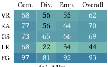
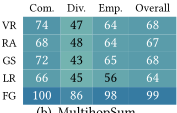
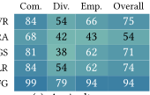
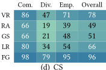
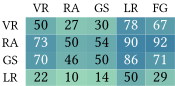
(a) chunk size=600
| VR | RA | GS | LR | FG | |
|---|---|---|---|---|---|
| VR | 50 | 23 | 37 | 62 | 68 |
| RA | 77 | 50 | 66 | 83 | 90 |
| GS | 63 | 34 | 50 | 70 | 72 |
| LR | 38 | 17 | 30 | 50 | 54 |
| | VR | RA | GS | LR | FG |
(b) chunk size=2400
| VR | RA | GS | LR | FG | |
|---|---|---|---|---|---|
| VR | 50 | 19 | 10 | 18 | 68 |
| RA | 81 | 50 | 24 | 61 | 88 |
| GS | 90 | 76 | 50 | 80 | 93 |
| LR | 82 | 39 | 20 | 50 | 91 |
| | VR | RA | GS | LR | FG |
(c) Qwen-2.5-32B
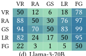
(d) Llama-3-70B
(e) GPT-4o-mini
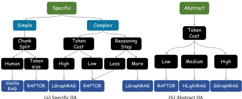
(a) 具体问答
(b) 抽象问答
在本节中，我们主要回顾现有检索增强生成（RAG）方法的相关工作。我们还介绍了 RAG 在各个领域的应用，特别是在数据管理领域的应用。
微软的方法（LGraphRAG 和 GGraphRAG）与标准的 VanillaRAG，以及几篇关于基于图的 RAG 系统的综述论文 [38, 97]。然而，我们的工作在范围和深度上都与这些工作存在显著差异。首先，我们的工作专注于系统地比较各种不同的基于图的 RAG 方法，并在统一框架下开展分阶段比较。这使我们能够识别核心设计原则，并能够通过组件重组构建出一种新的最先进方法。其次，与提供高层概述的综述论文不同，我们的工作以大量实验为基础，提供了深入的实证分析和实用的见解。
· RAG 应用。由于大量数据库论坛讨论中蕴含着丰富的开发者经验，近期的研究 [7, 17, 24, 42, 51, 77, 81, 103, 104] 已开始利用 RAG 来提升数据库性能。例如，GPTuner [42] 提出利用 RAG 来增强数据库参数（knob）调优，其借助领域知识识别重要的参数，并对参数取值进行粗略初始化以供后续细化。此外，D-Bot [103] 提出了一种基于大语言模型（LLM）的数据库诊断系统，该系统能够检索相关的知识块和工具，并利用它们准确地识别典型的根本原因。另外，基于 RAG 的 SQL 重写系统 [51, 79, 81] 近来也引起了广泛关注。基于 RAG 的数据分析系统也得到了研究 [3, 11, 52-56, 69]。至于其他领域的应用，我们建议读者参阅近期的 RAG 综述 [32, 98]。
在本文中，我们对现有的基于图的检索增强生成（RAG）方法进行了深入的实验评估与比较。我们首先提出了一个新颖的统一框架，该框架通过对若干关键操作进行抽象，能够涵盖所有现有的基于图的 RAG 方法。随后，我们在该框架下对不同基于图的 RAG 方法进行了透彻的分析与比较。我们进一步从不同角度、使用多种数据集，针对具体型与抽象型问答（QA）任务对这些方法进行了系统性评估，并通过组合现有技术开发了多种变体，这些变体往往优于最先进的方法。基于大量的实验结果与分析，我们得出了若干重要发现，并分析了影响性能的关键组件。此外，我们总结了经验教训，并提出了能够促进未来研究的切实可行的研究机会。
本工作部分受到以下项目资助：1+1+1 香港中文大学-香港中文大学（深圳）-GDSTC 联合合作基金（资助号 2025A0505000045）、广东省人工智能数学基础重点实验室（2023B1212010 001）、深圳市大数据研究院（资助号 SIF20240002）以及华为合作基金（资助号 TC20240920019）。
在本节中，我们给出在特定问答（QA）任务上的补充结果。
实验1. RAPTOR-K 与 RAPTOR 的比较。我们在前三个数据集上将 RAPTOR-K 与 RAPTOR 进行比较，并在表 11 中给出结果。我们观察到，RAPTOR-K 取得了与 RAPTOR 相当甚至更好的性能。
实验2. 图与索引构建的 token 开销。我们在图 14 中报告了在 HotpotQA 和 ALCE 数据集上构建四类图的 token 开销。回顾一下，一次大语言模型（LLM）调用的 token 开销由两部分组成：提示（prompt）token，即提供输入所使用的 token；以及补全（completion）部分，即模型作为响应所生成的 token。这里，我们在图 14(c) 至 (d) 中报告了 HotpotQA 和 ALCE 上 prompt 与 completion 的 token 开销，并在图 15 中展示其他数据集上的结果。我们得出结论：无论图的类型如何，prompt 部分的 token 开销总是高于 completion 部分。
实验3. 生成开销的评估。在本实验中，我们评估了各方法在特定 QA 任务中的时间开销和 token 开销。具体而言，我们在表 12 中报告了所有数据集上每个查询的平均时间开销和 token 开销，所得结论与正文中报告的一致。如图 16 所示，我们给出了所有特定 QA 数据集中全部问题的 prompt token 与 completion token 的平均 token 开销。可以观察到，各方法的运行时间与 completion token 开销高度成正比，这与 Transformer 架构的计算范式相符。
实验4. 对 RAPTOR 和 LGraphRAG 的详细分析。我们关于 RAPTOR 的第一项分析旨在解释为什么 RAPTOR 优于 VanillaRAG。回顾一下，在 RAPTOR 中，对于每个问题 𝑄，它会在整棵树中检索 top𝑘 个条目，这意味着被检索的条目可能来自不同的层。为此，我们在表 13 中报告了被检索条目在不同树层中的占比。可以看到，对于 MultihopQA 和 MusiqueQA 数据集，被检索到的高层信息（即不来自叶节点的条目）所占比例显著高于其他数据集。对于需要多跳推理才能回答问题的数据集，高层信息起着至关重要的作用。这或许可以解释为什么 RAPTOR 在这两个数据集上优于 VanillaRAG。
随后，我们通过修改 LGraphRAG 的检索方法或元素类型，对其在特定 QA 数据集中复杂问题上的表现进行了详细分析。通过这种方式，我们构建了 LGraphRAG 的三个变体，并在表 14 中给出每个变体的详细描述。其中，VGraphRAG-CC 引入了一种新的检索策略。与 LGraphRAG 不同，它使用向量搜索从向量数据库中检索 top𝑘 个元素（即 chunk 或 community）。最后，我们在三个复杂 QA 数据集上评估了它们的性能，并在表 15 中给出结果。
Exp.6. 大语言模型（LLM）骨干模型的影响。对于每个系统，我们评估了多个 LLM 骨干模型，包括 Llama-3-8B、Qwen-2.532B、Llama-3-70B 和 GPT-4o-mini。这些模型涵盖了从小规模到大规模的三种开源模型，以及一个专有但性能强大的 GPT 系列模型。在本实验中，我们将文本块大小（chunk size）固定为 1200 个 token。如表 17 所示，我们使用不同的 LLM 骨干模型，在 MultihopQA 和 ALCEAll 数据集上评估了每种检索增强生成（RAG）方法以及 ZeroShot 基线。根据结果可以看出：(1) 更强的模型通常能带来更好的性能，尤其是在 ZeroShot 设置下，该设置最直接地反映了底层 LLM 的固有能力。(2) 我们观察到 LightRAG 的三个变体 LLightRAG、GLightRAG 和 HLightRAG 以及 LGraphRAG 在使用更强大的 LLM 时取得了显著的性能提升。这可以归因于它们对富知识图谱（Rich Knowledge Graphs）和文本知识图谱（Textual Knowledge Graphs）的依赖，而更强的 LLM 有助于构建更高质量的图谱。(3) 与其他 LLM 骨干模型相比，HippoRAG 在使用 GPT-4o-mini 时表现出明显更优的性能。我们将此归因于 GPT-4o-mini 能够从问题中提取更准确的实体并构建更高质量的知识图谱，从而提升了相关文本块的检索效果和最终答案的准确性。(4) 无论使用哪种 LLM 骨干模型，我们提出的方法 VGraphRAG 始终取得最佳性能，这证明了我们所提出的统一框架的优势。
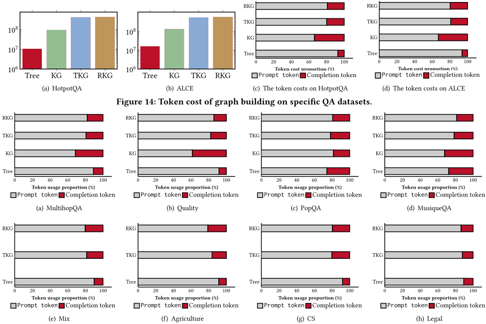
| Method.Method | MultihopQA.time | MultihopQA.token | Quality.time | Quality.token | PopQA.time | PopQA.token | MusiqueQA.time | MusiqueQA.token | HotpotQA.time | HotpotQA.token | ALCE.time | ALCE.token |
|---|---|---|---|---|---|---|---|---|---|---|---|---|
| ZeroShot | 3.23 s | 270.3 | 1.47 s | 169.1 | 1.17 s | 82.2 | 1.73 s | 137.8 | 1.51 s | 125.0 | 2.41 s | 177.2 |
| VanillaRAG | 2.35 s | 3623.4 | 2.12 s | 4502 | 1.41 s | 644.1 | 1.31 s | 745.4 | 1.10 s | 652.0 | 1.04 s | 849.1 |
| G-retriever | 6.87 s | 1250 | 5.18 s | 985.5 | 37.51 s | 3684.5 | 31.21 s | 3260.5 | - | - | 101.16 s | 5096.1 |
| ToG | 69.74 s | 16859.6 | 37.03 s | 10496.4 | 42.02 s | 11224.2 | 53.55 s | 12480.8 | - | - | 34.94 s | 11383.2 |
| KGP | 38.86 s | 13872.2 | 35.76 s | 14092.7 | 37.49 s | 6738.9 | 39.82 s | 7555.8 | - | - | 105.09 s | 9326.6 |
| DALK | 28.03 s | 4691.5 | 13.23 s | 2863.6 | 16.33 s | 2496.5 | 17.48 s | 3510.9 | 21.33 s | 3,989.7 | 17.04 s | 4071.9 |
| LLightRAG | 19.28 s | 5774.1 | 15.76 s | 5054.5 | 10.71 s | 2447.5 | 13.95 s | 3267.6 | 13.94 s | 3,074.2 | 10.34 s | 4427.9 |
| GLightRAG | 18.37 s | 5951.5 | 15.97 s | 5747.3 | 12.10 s | 3255.6 | 15.20 s | 3260.8 | 13.95 s | 3,028.7 | 13.02 s | 4028.1 |
| HLightRAG | 19.31 s | 7163.2 | 21.49 s | 6492.5 | 17.71 s | 5075.8 | 20.93 s | 5695.3 | 19.58 s | 4,921.7 | 16.55 s | 6232.3 |
| FastGraphRAG | 7.17 s | 5874.8 | 3.48 s | 6138.9 | 13.25 s | 6157 | 15.19 s | 6043.5 | 28.71 s | 6,029.8 | 25.82 s | 6010.9 |
| HippoRAG | 3.46 s | 3261.1 | 3.03 s | 3877.6 | 2.32 s | 721.3 | 2.69 s | 828.4 | 3.12 s | 726.4 | 2.94 s | 858.2 |
| LGraphRAG | 2.98 s | 6154.9 | 3.77 s | 6113.7 | 1.72 s | 4325.2 | 2.66 s | 4675.7 | 2.05 s | 4,806.2 | 2.11 s | 5441.1 |
| RAPTOR | 3.18 s | 3210 | 2.46 s | 4140.7 | 1.36 s | 1188.3 | 1.85 s | 1742.9 | 1.48 s | 757.6 | 1.54 s | 793.6 |
| Method.Method | MultihopQA.time | MultihopQA.token | Quality.time | Quality.token | PopQA.time | PopQA.token | MusiqueQA.time | MusiqueQA.token | HotpotQA.time | HotpotQA.token | ALCE.time | ALCE.token |
| Name | Retrieval elements | New retrieval strategy |
|---|---|---|
| LGraphRAG GraphRAG-ER GraphRAG-CC VGraphRAG-CC VGraphRAG | Entity, Relationship, Community, Chunk Entity, Relationship Community, Chunk Community, Chunk Entity, Relationship, Community, Chunk | ✗ ✗ ✗ ✓ ✓ |
| Name | Retrieval elements | New retrieval strategy |
| Layer | MultihopQA | Quality | PopQA | MusiqueQA | HotpotQA | ALCE |
|---|---|---|---|---|---|---|
| 0 | 59.3% | 76.8% | 76.1% | 69.3% | 89.7% | 90.6% |
| 1 | 27.5% | 18.7% | 16.5% | 28.1% | 9.5% | 8.8% |
| > 1 | 13.2% | 4.5% | 7.4% | 2.6% | 0.8% | 0.6% |
| Layer | MultihopQA | Quality | PopQA | MusiqueQA | HotpotQA | ALCE |
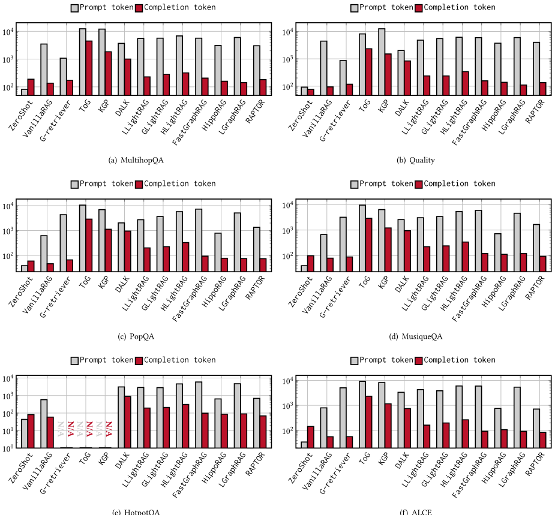
| Dataset | Metric | ZeroShot | VanillaRAG | LGraphRAG | RAPTOR | GraphRAG-ER | GraphRAG-CC | VGraphRAG-CC | VGraphRAG |
|---|---|---|---|---|---|---|---|---|---|
| MultihopQA | Accuracy Recall | 49.022 34.526 | 50.626 36.918 | 55.360 50.429 | 56.064 44.832 | 52.739 45.113 | 52.113 43.770 | 55.203 46.750 | 59.664 50.893 |
| MusiqueQA | Accuracy Recall | 1.833 5.072 | 17.233 27.874 | 12.467 23.996 | 24.133 35.595 | 11.200 22.374 | 13.767 25.707 | 22.400 35.444 | 26.933 40.026 |
| ALCE | STRREC STREM STRHIT | 15.454 3.692 30.696 | 34.283 11.181 63.608 | 28.448 8.544 54.747 | 35.255 11.076 65.401 | 26.774 7.5949 52.743 | 35.366 11.920 64.662 | 37.820 13.608 68.460 | 41.023 15.401 71.835 |
| Dataset | Metric | ZeroShot | VanillaRAG | LGraphRAG | RAPTOR | GraphRAG-ER | GraphRAG-CC | VGraphRAG-CC | VGraphRAG |
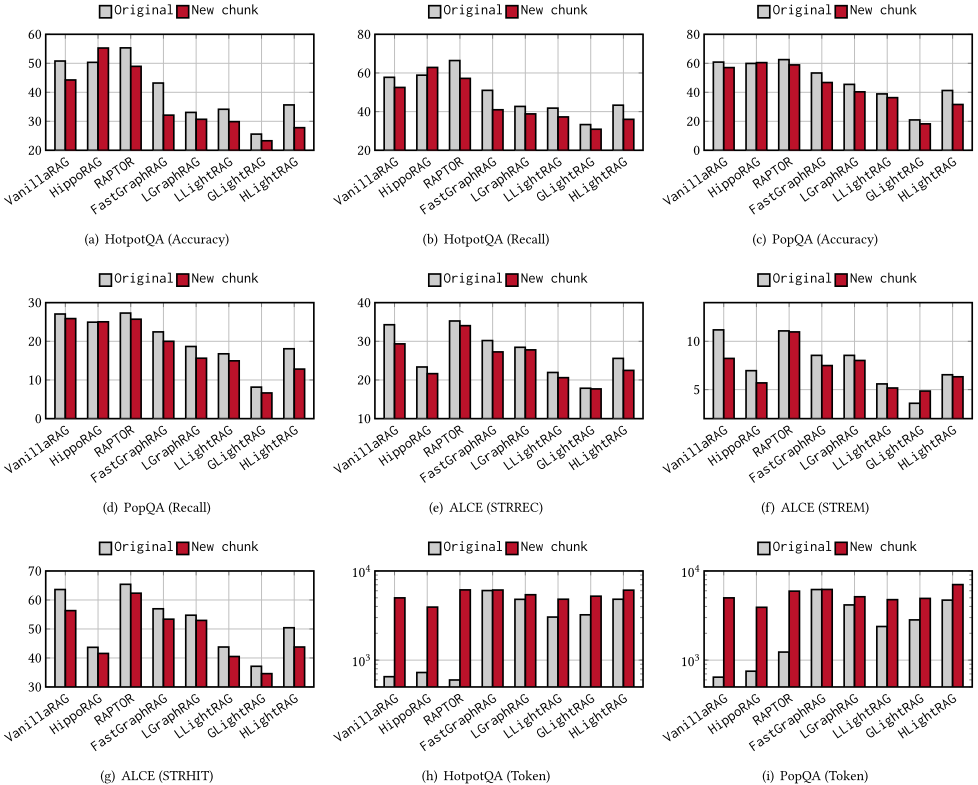
Exp.7. 图的规模。对于每个数据集，我们在表 18 中报告了五种类型图的规模。我们观察到，PG 通常比其他类型的图更稠密，因为 PG 基于共享的实体关系来连接节点，其中每个节点代表 PG 中的一个文本块。事实上，两个文本块共享至少几个实体的概率相当高，从而导致较高的图密度（即边数与节点数之比），有时甚至接近于团（clique，即完全连通图）。相比之下，KG、TKG 和 RKG 则稀疏得多，因为它们完全依赖 LLM 来提取节点和边。这种稀疏性主要是由于 LLM 通常生成的输出相对较短且不完整，遗漏了相当多潜在的节点-边对。有趣的是，所构建图的规模或密度与基于图的 RAG 方法的最终性能之间并未表现出强相关性。这一观察促使我们探索一种方法，用于在将所构建的图用于基于 LLM 的问答之前评估其质量。
Exp.8. 基于图的检索增强生成（RAG）方法的失败案例。我们想澄清的是，本文所呈现的结果代表每个数据集内所有问题的平均性能。因此，并非所有基于图的 RAG 方法在每个问题上都能始终优于基线 VanillaRAG。我们针对表现最优的方法开展了详细的失败案例分析。具体而言，我们考察了 RAPTOR、HippoRAG、RAPTOR 和 LGraphRAG 为何有时在特定问答（QA）任务中表现不佳。详细分析请参见下文。
| Chunk Size.Chunk Size | MultihopQA.Accuracy | MultihopQA.Recall | PopAll.Accuracy | PopAll.Recall | HotpotAll.Accuracy | HotpotAll.Recall | ALCEAll.STRREC | ALCEAll.STREM | ALCEAll.STRHIT |
|---|---|---|---|---|---|---|---|---|---|
| 600 | 54.421 | 42.740 | 57.255 | 24.171 | 49.190 | 56.935 | 30.174 | 8.333 | 57.911 |
| VanillaRAG 1200 | 50.626 | 36.918 | 57.041 | 25.877 | 44.254 | 52.511 | 29.334 | 8.228 | 56.329 |
| 2400 | 50.665 | 37.172 | 47.677 | 19.122 | 27.553 | 34.293 | 26.350 | 7.490 | 51.371 |
| 600 | 44.953 | 47.322 | 19.014 | 6.895 | 18.882 | 27.041 | 10.506 | 2.532 | 21.414 |
| G-retriever 1200 | 42.019 | 43.116 | 20.157 | 6.567 | 19.098 | 27.262 | 13.061 | 2.848 | 26.160 |
| 2400 | 41.667 | 36.611 | 20.229 | 6.763 | 27.958 | 36.940 | 14.822 | 2.954 | 30.591 |
| 600 | 42.214 | 37.823 | 49.035 | 22.642 | - | - | 16.240 | 3.376 | 33.439 |
| ToG 1200 | 41.941 | 38.435 | 49.750 | 22.767 | - | - | 15.909 | 3.059 | 33.755 |
| 2400 | 41.667 | 36.611 | 44.961 | 20.374 | - | - | 14.822 | 2.954 | 30.591 |
| 600 | 46.831 | 34.714 | 41.101 | 18.064 | - | - | 26.799 | 7.806 | 51.793 |
| KGP 1200 | 48.161 | 36.272 | 41.887 | 18.498 | - | - | 27.551 | 7.806 | 52.637 |
| 2400 | 48.083 | 36.486 | 40.815 | 18.060 | - | - | 26.370 | 6.540 | 51.477 |
| 600 | 55.986 | 48.202 | 41.243 | 16.131 | 32.766 | 41.737 | 21.734 | 4.536 | 44.304 |
| DALK 1200 | 53.952 | 47.232 | 42.602 | 17.024 | 30.416 | 39.544 | 21.327 | 4.430 | 43.987 |
| 2400 | 53.208 | 46.829 | 45.318 | 18.651 | 28.633 | 37.826 | 20.350 | 4.430 | 41.456 |
| 600 | 46.675 | 39.190 | 38.671 | 16.040 | 32.334 | 39.753 | 20.084 | 4.641 | 40.717 |
| LLightRAG 1200 | 44.053 | 35.528 | 36.312 | 14.947 | 29.876 | 37.258 | 20.594 | 5.169 | 40.506 |
| 2400 | 43.858 | 36.878 | 35.811 | 14.230 | 29.336 | 36.621 | 19.576 | 5.485 | 38.397 |
| 600 | 47.222 | 36.885 | 20.801 | 6.860 | 24.419 | 31.852 | 18.319 | 5.063 | 36.814 |
| GLightRAG 1200 | 48.474 | 38.365 | 18.227 | 6.643 | 23.285 | 30.888 | 17.686 | 4.852 | 34.599 |
| 2400 | 48.592 | 41.213 | 14.653 | 5.890 | 19.665 | 27.566 | 13.493 | 3.376 | 26.688 |
| 600 | 50.196 | 40.626 | 34.668 | 15.326 | 30.632 | 38.194 | 23.833 | 5.907 | 47.363 |
| HLightRAG 1200 | 50.313 | 41.613 | 31.594 | 12.812 | 27.796 | 36.010 | 22.475 | 6.329 | 43.776 |
| 2400 | 49.648 | 41.775 | 30.093 | 11.683 | 26.958 | 34.387 | 20.816 | 5.485 | 40.823 |
| 600 | 50.000 | 44.736 | 49.392 | 22.326 | 35.467 | 43.534 | 30.116 | 9.705 | 55.907 |
| FastGraphRAG 1200 | 52.895 | 44.278 | 46.748 | 19.996 | 32.118 | 40.966 | 27.258 | 7.490 | 53.376 |
| 2400 | 47.261 | 46.251 | 32.809 | 12.879 | 26.445 | 34.800 | 22.020 | 6.435 | 42.300 |
| 600 | 47.144 | 41.210 | 62.401 | 26.892 | 50.783 | 58.454 | 27.025 | 8.122 | 51.477 |
| HippoRAG 1200 | 53.760 | 47.671 | 60.472 | 25.041 | 55.267 | 62.862 | 21.633 | 5.696 | 41.561 |
| 2400 | 52.152 | 46.601 | 50.751 | 19.986 | 45.624 | 53.597 | 26.477 | 6.118 | 52.848 |
| 600 | 55.282 | 46.267 | 53.181 | 26.292 | 41.194 | 49.801 | 33.692 | 10.971 | 62.447 |
| LGraphRAG 1200 | 55.360 | 50.429 | 39.814 | 17.998 | 30.686 | 38.824 | 27.785 | 8.017 | 52.954 |
| 2400 600 | 54.930 56.729 | 44.588 46.358 | 43.317 61.830 | 20.185 28.176 | 37.061 56.132 | 45.366 63.584 | 28.398 35.111 | 7.806 12.236 | 54.008 63.186 |
| RAPTOR 1200 | 56.064 | 44.832 | 47.963 | 21.399 | 31.983 | 39.864 | 34.044 | 10.971 | 62.342 |
| 2400 | 56.299 | 44.610 | 48.177 | 21.289 | 31.983 | 39.122 | 33.432 | 10.654 | 61.181 |
| Chunk Size.Chunk Size | MultihopQA.Accuracy | MultihopQA.Recall | PopAll.Accuracy | PopAll.Recall | HotpotAll.Accuracy | HotpotAll.Recall | ALCEAll.STRREC | ALCEAll.STREM | ALCEAll.STRHIT |
HippoRAG 的主要失败原因：
| LLM backbone.LLM backbone | MultihopQA.Accuracy | MultihopQA.Recall | ALCEAll.STRREC | ALCEAll.STREM | ALCEAll.STRHIT |
|---|---|---|---|---|---|
| Llama-3-8B | 49.022 | 34.256 | 15.454 | 3.692 | 30.696 |
| Qwen-2.5-32B | 45.070 | 33.332 | 30.512 | 10.127 | 56.118 |
| ZeroShot Llama-3-70B | 55.908 | 52.987 | 31.234 | 7.170 | 61.920 |
| GPT-4o-mini | 59.546 | 48.322 | 34.965 | 10.232 | 66.245 |
| Llama-3-8B | 50.626 | 36.918 | 29.334 | 8.228 | 56.329 |
| Qwen-2.5-32B | 56.299 | 47.660 | 39.490 | 14.873 | 69.937 |
| VanillaRAG Llama-3-70B | 56.768 | 49.127 | 34.961 | 9.810 | 68.038 |
| GPT-4o-mini | 59.311 | 47.941 | 35.735 | 10.127 | 68.249 |
| Llama-3-8B | 42.019 | 43.116 | 13.061 | 2.848 | 26.160 |
| Qwen-2.5-32B | 43.075 | 33.864 | 34.678 | 13.608 | 60.338 |
| G-retriever Llama-3-70B | 50.430 | 50.144 | 24.575 | 5.907 | 49.051 |
| GPT-4o-mini | 56.534 | 46.427 | 31.681 | 7.068 | 62.764 |
| Llama-3-8B | 41.941 | 38.435 | 15.909 | 3.059 | 33.755 |
| Qwen-2.5-32B | 34.390 | 35.566 | 19.167 | 4.430 | 39.662 |
| ToG Llama-3-70B | 42.762 | 38.495 | 18.449 | 3.270 | 38.819 |
| GPT-4o-mini | 41.862 | 30.247 | 28.405 | 7.068 | 56.962 |
| Llama-3-8B | 48.161 | 36.272 | 27.551 | 7.806 | 52.637 |
| Qwen-2.5-32B | 61.463 | 57.340 | 40.608 | 14.873 | 71.097 |
| KGP Llama-3-70B | 55.008 | 47.878 | 35.420 | 10.549 | 68.379 |
| GPT-4o-mini | 63.146 | 55.789 | 38.015 | 12.764 | 69.620 |
| Llama-3-8B Qwen-2.5-32B | 53.952 32.003 | 47.232 20.158 | 21.327 16.653 | 4.430 4.430 | 43.987 33.333 |
| DALK Llama-3-70B | 60.524 | 55.086 | 28.980 | 5.696 | 60.338 |
| GPT-4o-mini | 66.980 | 57.687 | 31.813 | 8.333 | 62.236 |
| Llama-3-8B | 44.053 | 35.528 | 20.594 | 5.169 | 40.506 |
| Qwen-2.5-32B | 48.552 | 45.387 | 31.549 | 9.916 | 59.177 |
| LLightRAG Llama-3-70B | 57.081 | 54.510 | 28.636 | 8.228 | 56.013 |
| GPT-4o-mini | 52.113 | 38.923 | 38.446 | 15.084 | 33.456 |
| Llama-3-8B | 48.474 | 38.365 | 17.686 | 4.852 | 34.599 |
| Qwen-2.5-32B | 52.582 | 48.236 | 27.961 | 9.599 | 53.165 |
| GLightRAG Llama-3-70B | 55.986 | 51.713 | 23.553 | 5.807 | 45.992 |
| GPT-4o-mini | 55.125 | 47.899 | 39.095 | 15.506 | 67.933 |
| Llama-3-8B | 50.313 | 41.613 | 22.475 | 6.329 | 43.776 |
| Qwen-2.5-32B | 53.678 | 51.403 | 34.168 | 10.971 | 63.819 |
| HLightRAG Llama-3-70B | 57.081 | 54.510 | 29.548 | 8.228 | 57.911 |
| GPT-4o-mini | 55.829 | 46.424 | 41.334 | 15.506 | 71.730 |
| Llama-3-8B | 52.895 | 44.278 | 27.258 | 7.490 | 53.376 |
| Qwen-2.5-32B | 46.088 | 50.370 | 31.387 | 10.021 | 59.388 |
| FastGraphRAG Llama-3-70B | 54.069 | 55.787 | 35.658 | 12.236 | 65.612 |
| GPT-4o-mini | 66.080 | 57.007 | 23.521 | 8.228 | 42.827 |
| Llama-3-8B | 53.760 | 47.671 | 21.633 | 5.696 | 41.561 |
| Qwen-2.5-32B | 48.083 | 40.488 | 37.419 | 13.397 | 66.245 |
| HippoRAG Llama-3-70B | 57.277 | 57.736 | 32.904 | 9.916 | 32.534 |
| GPT-4o-mini | 67.723 | 55.482 | 39.274 | 12.447 | 72.046 |
| Llama-3-8B | 55.360 | 50.429 | 27.785 | 8.017 | 52.954 |
| Qwen-2.5-32B | 49.531 | 52.113 | 35.406 | 12.553 | 63.924 |
| LGraphRAG Llama-3-70B | 58.060 | 55.390 | 34.256 | 10.232 | 66.561 |
| GPT-4o-mini | 65.415 | 50.216 | 36.890 | 11.287 | 69.304 |
| Llama-3-8B | 56.064 | 44.832 | 34.044 | 10.971 | 62.342 |
| Qwen-2.5-32B | 56.359 | 39.267 | 13.924 | 70.359 | |
| RAPTOR Llama-3-70B | 60.485 63.028 | 61.042 | 37.286 | 12.236 | 68.671 |
| GPT-4o-mini | 60.603 | 51.521 | 29.770 | 8.017 | 58.861 64.030 |
| Llama-3-8B Qwen-2.5-32B | 59.664 57.277 | 50.893 55.151 | 35.213 39.234 | 11.603 14.557 | 69.831 |
| VGraphRAG Llama-3-70B | 67.567 | 68.445 | 37.576 | 12.447 | 69.198 |
| GPT-4o-mini | 68.193 | 56.564 | 43.963 | 18.038 | 74.473 |
| LLM backbone.LLM backbone | MultihopQA.Accuracy | MultihopQA.Recall | ALCEAll.STRREC | ALCEAll.STREM | ALCEAll.STRHIT |
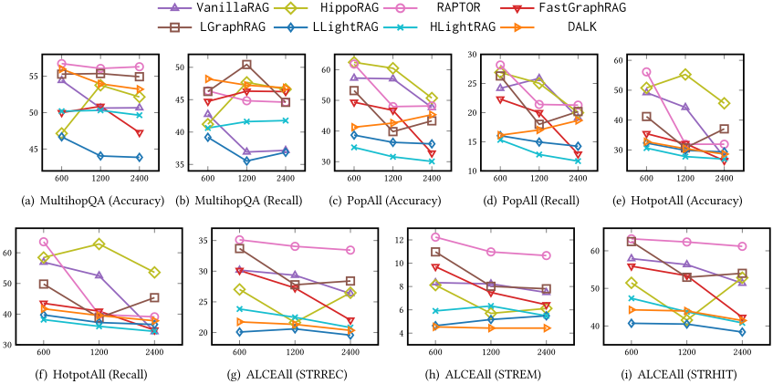
| Dataset | Tree.# of vertices | Tree.# of edges | PG.# of vertices | PG.# of edges | KG.# of vertices | KG.# of edges | TKG.# of vertices | TKG.# of edges | RKG.# of vertices | RKG.# of edges |
|---|---|---|---|---|---|---|---|---|---|---|
| MultihopQA | 2,053 | 2,052 | 1,658 | 564,446 | 35,953 | 37,173 | 12,737 | 10,063 | 18,227 | 12,441 |
| Quality | 1,862 | 1,861 | 1,518 | 717,468 | 28,882 | 30,580 | 10,884 | 8,992 | 13,836 | 9,044 |
| PopQA | 38,325 | 38,324 | 32,157 | 3,085,232 | 260,202 | 336,676 | 179,680 | 205,199 | 188,946 | 215,623 |
| MusiqueQA | 33,216 | 33,215 | 29,898 | 3,704,201 | 228,914 | 295,629 | 153,392 | 183,703 | 149,125 | 188,149 |
| HotpotQA | 73,891 | 73,890 | 66,559 | 13,886,807 | 511,705 | 725,521 | 291,873 | 401,693 | 324,284 | 436,362 |
| ALCE | 99,303 | 99,302 | 89,376 | 22,109,289 | 610,925 | 918,499 | 306,821 | 475,018 | 353,989 | 526,486 |
| Mix | 719 | 718 | 1,778 | 1,225,815 | 28,793 | 34,693 | 7,464 | 2,819 | 7,701 | 3,336 |
| MultihopSum | 2,053 | 2,052 | N/A | N/A | N/A | N/A | 12,737 | 10,063 | 18,227 | 12,441 |
| Agriculture | 2,156 | 2,155 | N/A | N/A | N/A | N/A | 15,772 | 7,333 | 17,793 | 12,600 |
| CS | 2,244 | 2,243 | N/A | N/A | N/A | N/A | 10,175 | 6,560 | 12,340 | 8,692 |
| Legal | 5,380 | 5,379 | N/A | N/A | N/A | N/A | 15,034 | 10,920 | 16,565 | 17,633 |
| Dataset | Tree.# of vertices | Tree.# of edges | PG.# of vertices | PG.# of edges | KG.# of vertices | KG.# of edges | TKG.# of vertices | TKG.# of edges | RKG.# of vertices | RKG.# of edges |
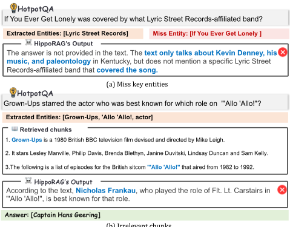
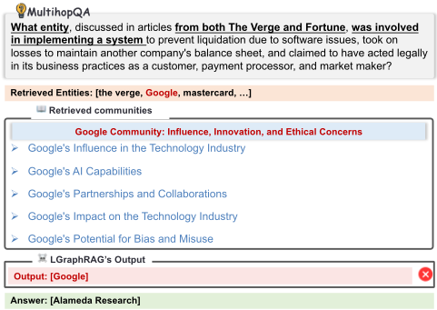
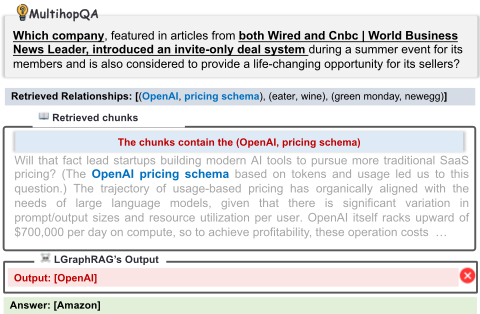
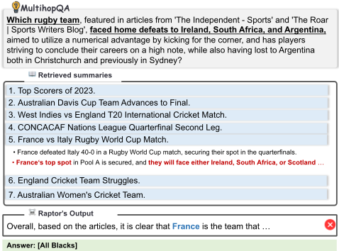
相似但在逻辑上并不统一。例如，图 20 中的摘要“2023 年得分最高者”（Top Scorers of 2023）包含了一些与 2023 年得分者仅松散相关的事实，这些内容过于宽泛，无法提供精确的答案。在总结此类内容时，大语言模型（LLM）往往会产生笼统或碎片化的摘要，无法捕捉回答问题所需的关键信息。
在本小节中，我们给出在摘要式问答（abstract QA）任务上的补充结果。
Exp.1. 图与索引构建的 Token 开销。所有摘要式问答数据集上图与索引构建的 Token 开销分别如图 23 和图 24 所示。相关结论与 7.2 节中 Exp.2 的结论高度相似。
Exp.2. 分块大小（chunk size）的影响。我们在图 25 至图 27 中报告了各种 RAG 方法在不同分块大小下于摘要式问答任务上的性能。我们的主要观察如下：(1) GGraphRAG 的性能在不同分块大小下保持稳定，这可能是由于其采用 Map-Reduce 策略进行最终答案合成，从而缓解了分块粒度的影响。(2) 相比之下，FastGraphRAG 和 VanillaRAG 等方法在不同分块大小下表现出更大的波动，因为其性能严重依赖于单个分块的粒度——较小的分块往往能提供更精确的信息，直接影响检索与生成质量。(3) 无论分块大小如何，RAPTOR 和 GGraphRAG 始终取得最佳性能，这再次印证了我们之前的结论：高层结构信息对摘要式问答任务至关重要。
此外，我们在不同分块大小下评估了我们新提出的方法 CheapRAG。如图 28 所示，CheapRAG 总体上优于五个基线方法。值得注意的是，在 600-token 设置下，CheapRAG 在更多情况下超越了 GGraphRAG。我们将此归因于较小分块具有更高的精度，与 GGraphRAG 所采用的基于实体频率的检索策略相比，这提升了 CheapRAG 中基于语义相似度的检索的有效性。
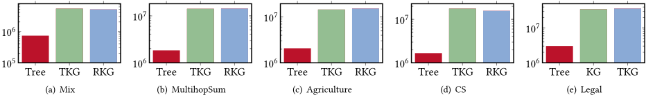
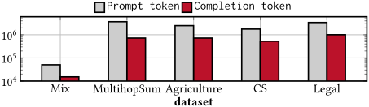
Exp.3. LLM 骨干模型的影响。我们在 MultihopSum 数据集上使用不同的 LLM 骨干模型评估了所有支持摘要式问答的方法。Llama-3-8B 的结果如图 26 所示，而其他模型的结果见图 29 至图 31。我们观察到，在不同骨干模型下，各方法在摘要式问答任务上的性能保持相对稳定——尤其是与特定问答（specific QA）任务中出现的波动相比。我们注意到，所有方法仍然落后于 GGraphRAG，这进一步凸显了社区级信息对摘要式问答任务尤为有益。此外，我们在不同 LLM 骨干模型下将新提出的方法 CheapRAG 与五个强基线进行了比较。如图 32 所示，随着模型容量的增加，CheapRAG 表现出显著的性能提升。值得注意的是，在 GPT-4o-mini 骨干模型下，CheapRAG 在所有评估案例中几乎全面取胜，清楚地展示了其强大的泛化能力和有效性。
总体上证明更为有效。此外，这些结果支持了 Map-Reduce 机制在检索过程中过滤无关信息方面的有效性。
本节概述了用于评估的各项指标。
为抽象问题定义真值（ground truth）面临重大挑战，尤其是那些涉及复杂高层语义的问题。为解决这一问题，我们受 [16, 25] 启发，采用了一种基于大语言模型（LLM）的多维度比较方法，从全面性（comprehensiveness）、多样性（diversity）、赋能性（empowerment）和整体质量（overall quality）四个方面进行评估。我们使用一个强大的 LLM（具体为 GPT-4o）来对每个基线与我们方法进行比较并排序。所使用的评估提示词如图 35 所示。这四个指标的定义 [16, 20, 25] 如下：
| VR | RA | GS | LR | FG | VR | RA | GS | LR | FG | VR | RA | GS | LR | FG | VR | RA | GS | LR FG | |||||
|---|---|---|---|---|---|---|---|---|---|---|---|---|---|---|---|---|---|---|---|---|---|---|---|
| VR | 50 | 27 | 32 | 78 | 56 | VR | 50 | 42 | 17 | 82 | 69 | VR | 50 | 34 | 24 | 82 | 74 | VR | 50 | 27 30 | 78 | 67 | |
| RA | 73 | 50 | 61 | 88 | 90 | RA | 58 | 50 | 18 | 87 | 82 | RA | 66 | 50 | 38 | 92 | 91 | RA | 73 50 | 54 | 90 | 92 | |
| GS | 68 | 39 | 50 | 81 | 66 | GS | 83 | 82 | 50 | 97 | 92 | GS | 76 | 62 | 50 | 93 | 89 | GS | 70 | 46 50 | 86 | 71 | |
| LR | 27 | 12 | 19 | 50 | 29 | LR | 18 | 13 | 3 | 50 | 31 | LR | 18 | 8 | 7 | 50 | 27 | LR | 22 | 10 | 14 | 50 | 29 |
| FG | 44 | 10 | 34 | 71 | 50 | FG | 31 | 18 | 8 | 69 | 50 | FG | 26 | 9 | 11 | 73 | 50 | FG | 33 | 8 19 | 71 | 50 | |
| (a) Comprehensiveness (b) Diversity (c) Empowerment (d) Overall |
| | VR | RA | GS | LR | FG | | VR | RA | GS | LR | FG | | VR | RA | GS | LR | FG | | VR | RA | GS | LR FG | |
| VR | RA | GS | LR | FG | VR | RA | GS | LR | FG | VR | RA | GS | LR | FG | VR RA | GS | LR FG | |||||
|---|---|---|---|---|---|---|---|---|---|---|---|---|---|---|---|---|---|---|---|---|---|---|
| VR | 50 | 50 | 2 | 46 | 95 | VR | 50 | 64 | 58 | 64 | 93 | VR | 50 | 52 | 36 | 39 | 95 | VR | 50 52 | 44 | 46 | 95 |
| RA | 50 | 50 | 47 | 48 | 94 | RA | 36 | 50 | 42 | 49 | 85 | RA | 48 | 50 | 45 | 45 | 93 | RA | 48 50 | 45 | 47 | 94 |
| GS | 78 | 53 | 50 | 79 | 96 | GS | 42 | 55 | 50 | 52 | 92 | GS | 64 | 54 | 50 | 41 | 97 | GS | 56 55 | 50 | 52 | 97 |
| LR | 54 | 52 | 21 | 50 | 92 | LR | 36 | 51 | 48 | 50 | 88 | LR | 61 | 55 | 59 | 50 | 95 | LR | 54 53 | 48 | 50 | 93 |
| FG | 5 | 6 | 4 | 8 | 50 | FG | 7 | 15 | 8 | 12 | 50 | FG | 5 | 7 | 3 | 5 | 50 | FG | 5 6 | 3 | 7 | 50 |
| (a) Comprehensiveness (b) Diversity (c) Empowerment (d) Overall |
| | VR | RA | GS | LR | FG | | VR | RA | GS | LR | FG | | VR | RA | GS | LR | FG | | VR RA | GS | LR FG | |
| VR | RA | GS | LR | FG | VR | RA | GS | LR | FG | VR | RA | GS | LR | FG | VR | RA | GS | LR FG | |||||
|---|---|---|---|---|---|---|---|---|---|---|---|---|---|---|---|---|---|---|---|---|---|---|---|
| VR | 50 | 22 | 44 | 60 | 67 | VR | 50 | 32 | 17 | 67 | 69 | VR | 50 | 26 | 28 | 66 | 75 | VR | 50 | 23 37 | 62 | 68 | |
| RA | 78 | 50 | 73 | 83 | 88 | RA | 68 | 50 | 28 | 82 | 82 | RA | 74 | 50 | 45 | 83 | 91 | RA | 77 50 | 66 | 83 | 90 | |
| GS | 56 | 27 | 50 | 61 | 63 | GS | 83 | 72 | 50 | 90 | 90 | GS | 72 | 55 | 50 | 86 | 89 | GS | 63 | 34 50 | 70 | 72 | |
| LR | 40 | 17 | 39 | 50 | 53 | LR | 33 | 18 | 10 | 50 | 53 | LR | 34 | 17 | 14 | 50 | 57 | LR | 38 | 17 | 30 | 50 | 54 |
| FG | 33 | 12 | 37 | 47 | 50 | FG | 31 | 18 | 10 | 47 | 50 | FG | 25 | 9 | 11 | 43 | 50 | FG | 32 | 10 28 | 46 | 50 | |
| (a) Comprehensiveness (b) Diversity (c) Empowerment (d) Overall |
| | VR | RA | GS | LR | FG | | VR | RA | GS | LR | FG | | VR | RA | GS | LR | FG | | VR | RA | GS | LR FG | |
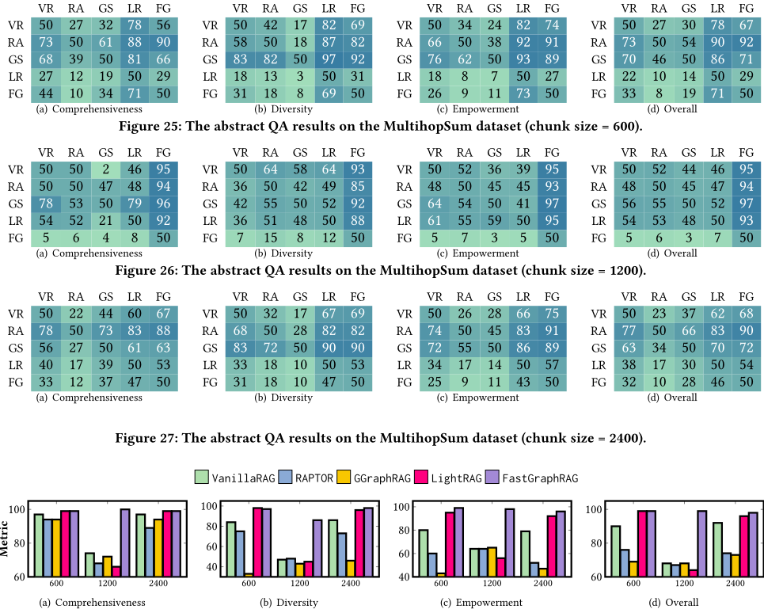
为了更好地说明这些维度，图 36 展示了在全面性、多样性和赋能性方面表现较好与较差的答案示例。
正面对比（head-to-head comparison）。为了借助 LLM 评估器通过正面对比来评估抽象问答（QA）任务，我们选取了四个目标指标，用以刻画抽象问题所期望的品质。抽象问题的答案并非对特定文本细节的罗列，而是对数据集中与查询相关内容的高层次理解。对抽象问题的良好回答应在以下四个指标上均有良好表现，包括“全面性”（Comprehensiveness）、“多样性”（Diversity）、“赋能性”（Empowerment）和“整体性”（Overall）。
正面对比获胜结果展示了不同方法之间的相对性能。每个数值表示行方法优于列方法的测试用例所占百分比——数值越高表示性能越好。例如，图 37 展示了在 Mix 数据集上“全面性”（comprehensive）维度下的一个正面对比结果示例。第一行第三列中的数值 30 表示 VanillaRAG 在 30% 的用例中优于 GGraphRAG，这表明在该指标上 VanillaRAG 的表现不如 GGraphRAG。根据图中的整体比较，五种方法的相对排名为：1. HLightRAG (LR)，2. GGraphRAG (GS)，3. VanillaRAG (VR)，4. RAPTOR (RA)，5. FastGraphRAG (FG)。
在本小节中，我们提供关于系统实现的更多细节。具体而言，我们使用 Llama-index [58]（一个知名的开源项目）中的 HNSW [59] 作为默认向量数据库，以实现高效的向量搜索。此外，对于每种方法，我们通过批处理或并行化诸如节点或文本块编码、个性化 PageRank 计算等操作来优化检索阶段的效率。
为什么选择 Llama-3-8B？除了 Llama-3-8B 在现有工作中的广泛使用之外，我们的这一选择还出于以下考虑：
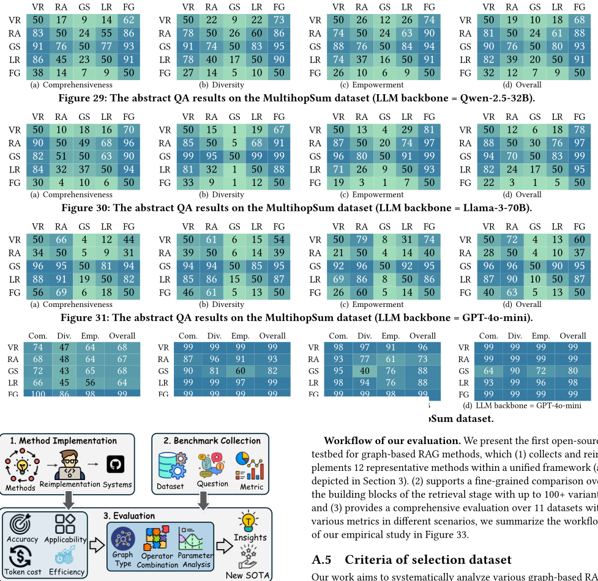
具备内部知识的内容能够实现准确且与上下文相关的响应生成。
我们的工作旨在系统地分析各种基于图的 RAG 方法并提供深入的见解。为此，我们基于以下标准选择数据集：
包括涵盖农业、计算机科学和法律文本等多个领域的数据集。
在此，我们介绍一些在现有基于图的 RAG 方法中未被使用、但在我们新设计的最先进方法中所采用的算子。
块类型（Chunk type）。我们引入了一个新的块类型算子 VDB，该算子用于我们的 VGraphRAG 方法中。此算子与 VanillaRAG 的块检索策略相同。
社区类型（Community type）。我们还引入了一个新的社区类型算子 VDB，其通过向量搜索检索 top𝑘 个社区，其中每个社区的嵌入（embedding）是通过对该社区的社区报告进行编码而生成的。
在本小节中，我们展示从本研究中总结出的更多经验教训与机遇。
L6. 对于大规模数据集，GraphRAG 方法的两个版本都会产生不可接受的 token 成本，因为它们包含大量的社区，导致生成社区报告的成本高昂。
L7. 无论问题是具体的还是抽象的，它们都依赖于外部语料库（即文档）。对于此类问题，仅使用图结构信息（节点、边或子图）不足以取得良好的性能。
L8. 专为知识推理任务设计的方法，例如 DALK、ToG 和 G-retriever，在基于文档的 QA 任务上表现不佳。这是因为这些方法更适合从构建良好的 KG 中提取推理规则或路径。然而，当 KG 由原始文本语料库构建时，它们可能无法准确捕捉正确的推理规则，从而导致在基于文档的 QA 任务中表现欠佳。
L9. RAG 方法的效能在很大程度上受到所检索元素与给定问题之间相关性的影响。也就是说，如果检索到的信息不相关或含有噪声，可能会降低 LLM 的性能。在设计新的基于图的 RAG 方法时，评估检索策略能否针对给定问题有效检索到相关信息至关重要。
O5. 在实际应用中，外部知识来源并不局限于文本语料库，还可能包括 PDF、HTML 页面、表格以及其他结构化或半结构化数据。一个有前景的未来研究方向是探索面向异构知识源的基于图的 RAG 方法。
O6. 一个有趣的未来研究方向是探索更多基于图的 RAG 应用。例如，将基于图的 RAG 应用于科学文献检索，可以帮助研究人员高效地提取相关研究并发现概念之间隐藏的关系。另一个潜在应用是法律文档分析，其中图结构可以捕捉判例和法律解释，以辅助法律推理。
O7. 用户可能同时提出多个问题，但现有的基于图的 RAG 方法是按顺序处理它们的。因此，一个有前景的未来方向是探索能够优化多查询处理的高效调度策略。这可能涉及将相似的问题进行批处理或使检索并行化。
O8. 不同类型的问题需要不同层次的信息，然而所有现有的基于图的 RAG 方法都依赖于固定的、预定义的规则。如何设计一种能够满足这些不同需求的自适应机制，仍然是一个悬而未决的问题。
O9. 现有方法并未充分利用图结构；它们通常依赖于简单的图模式（例如节点、边或 𝑘-hop 路径）。尽管 GraphRAG 采用了层次化社区结构（通过 Leiden 算法检测），但这种方法没有考虑节点属性，可能会损害社区的质量。也就是说，确定哪种图结构更优仍然是一个悬而未决的问题。
O10. 众所周知的图数据库系统，如 Neo4j [64] 和 Nebula [63]，支持通过 LLM 将语料库转换为知识图谱。然而，使这些流行的系统支持各种基于图的 RAG 方法所需的多样化算子，是一个令人兴奋的机遇。
我们的框架通过支持在不同阶段组合不同的方法，提供了卓越的灵活性。这种模块化设计使不同的算法能够无缝集成，确保每个阶段——例如图构建以及检索与生成——都可以被独立优化和重新组合。例如，像 HippoRAG 这类通常依赖 KG 的方法，可以根据特定领域的需求轻松地改用 RKG。
此外，我们的算子设计只需进行简单的修改——通常仅需几行代码——即可创建全新的基于图的 RAG 方法。通过调整检索阶段或替换组件，研究人员可以快速测试和实现新策略，从而显著加速基于图的 RAG 方法的开发周期。
检索元素（如节点、关系或子图）与检索算子的结合使用进一步强化了我们框架的模块化特性。这种组合使我们能够轻松设计针对特定任务量身定制的新算子。例如，通过修改针对给定元素的检索策略，我们可以创建适合不同应用场景的定制化算子。
通过在我们的统一框架下系统性地评估各种检索组件的有效性，我们可以识别出图构建、索引和检索策略的最高效组合。这种方法使我们能够在一系列用例中优化检索性能，既能改进现有方法，又能创造新颖的、最先进的技术。
| Index | Index Size | Token Consuming | Construction Time |
|---|---|---|---|
| Node Index | ★★ | N/A | ★ |
| Relationship Index | ★★★ | N/A | ★★ |
| Community Index | ★ | ★★★★ | ★★★★ |
| Index | Index Size | Token Consuming | Construction Time |
最后，我们的框架通过提供一种评估基于图的 RAG 方法的标准化方法论，为更广泛的研究社区做出贡献。统一评估测试平台的引入确保了可复现性，促进了公平的基准测试，并为基于 RAG 的 LLM 应用的未来创新提供了便利。
在我们的实证研究中，我们投入了大量精力从多个角度评估现有基于图的 RAG 方法的性能。然而，我们的研究仍然存在一些局限性，主要源于资源限制。(1) Token 长度限制：主要实验使用 token 窗口大小为 8k 的 Llama-3-8B 进行。这种对 token 长度的限制制约了模型处理较长输入序列的能力，可能会影响这些方法的整体性能，尤其是在需要大量上下文的任务中。拥有更大 token 窗口的更大模型能够更好地捕获长程依赖并给出更稳健的结果。这一约束是可能影响我们研究结论可泛化性的一个重要因素。(2) 知识数据集有限：我们的研究未包含特定领域的知识数据集，而这类数据集对某些应用至关重要。纳入此类数据集可以提供更细致的洞察，并有助于更好地评估这些方法在专门场景中的表现。(3) 资源限制：受资源所限，我们使用的最大模型是 Llama-3-70B，整篇论文消耗了近 100 亿个 token。运行更大的模型（如 GPT-4o，175B 参数或更高）将产生显著更高的成本，视使用量而定可能高达数十万美元。虽然我们承认引入更强大的模型可以进一步提升性能，但 70B 模型已经是一个强有力的选择，在性能与资源可行性之间取得了平衡。也就是说，在未来的工作中探索更大模型的潜力可以提供有价值的见解，并进一步完善研究结论。(4) 提示敏感性：每种方法的性能在很大程度上受其提示设计的影响。由于资源限制，我们没有进行提示消融研究，而是使用了各论文中现成的提示。实际上，更公平的比较可以通过使用提示调优工具（如 DSPy [39]）来定制提示并优化每种方法的性能，从而减轻这一影响。
这些局限性指明了未来探索的方向，克服这些约束将能够对基于图的 RAG 方法进行更全面、更可靠的评估，从而强化研究结论并推动该领域的研究进展。
将输入语料库切分为更小的分块（chunk）是所有 RAG 方法（包括非图和基于图的变体）的必要步骤。其原因可归纳为以下三个方面：
总而言之，分块不仅因 token 限制而必不可少，也是 RAG 系统设计中不可或缺的一环。
事实上，很难定义一个唯一的“最佳”图，因为每种类型的图都有其自身的优缺点。为帮助阐明这一点，我们在表 2 中总结了每种图类型的关键特性。例如，尽管树（tree）结构能够以极小的成本构建，但其携带的信息有限。基于树的方法（如 RAPOTR）在轻量级设置下展现出具有竞争力的性能。然而，由于语义覆盖范围有限，这类方法在复杂 QA 和抽象 QA 任务中可能表现不佳。相比之下，构建于 TKG 之上的方法（如 VGraphRAG 和 GGraphRAG）则受益于更丰富的实体和关系表示。这种增强的表达能力使其能够在信息密集型任务中进行更准确的推理。然而，这些优势的代价是更高的 token 消耗和更长的构建时间。此外，虽然 PG 在构建过程中避免了 token 的使用，但由于需要对分块进行穷举式的两两比较，它会带来显著的时间开销。
与图的比较类似，同样难以确定一个普遍适用的“最佳”索引。因此，我们在表 19 中总结了不同索引的特性。可以看到，关系索引（relationship index）的规模往往较大，而社区索引（community index）更为紧凑，但在 token 和时间方面的构建成本最高。事实上，在实验中，我们报告了为每个数据集构建社区索引所产生的 token 成本。值得注意的是，对于某些数据集（如 HotpotQA 和 ALCE），这一成本与构建图本身的成本相当，超过 10^8 个 token。尽管存在差异，所有索引都有一个共同目标，即在基于图的 RAG 系统中促进快速而有效的检索。具体索引的选择应与检索策略以及下游 QA 任务的需求保持一致。例如，要回答依赖于某些高层摘要的抽象问题，最好使用基于社区的索引（如 GraphRAG 的索引）来检索相关信息，因为它们通常提供针对各社区的摘要报告。
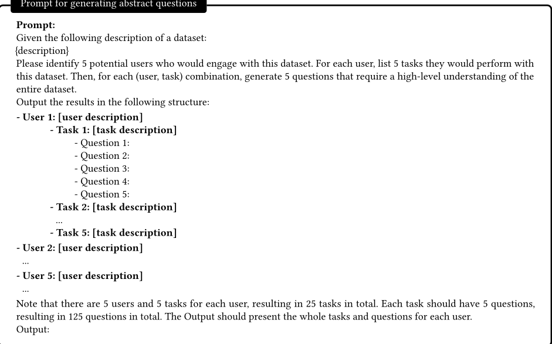
We agree that graph-based RAG is very relevant to the information retrieval and NLP communities, but we also believe that it is highly relevant to the graph data management community, since it has received growing interest from both industry and academia. In the industrial area, Ant-Group recently proposed Chat2Graph [6], a graph-native agent system that incorporates graph-based RAG as a core component. Similarly, modern graph database systems such as Neo4j [65], NebulaGraph [63], and PostgreSQL [71] are beginning to support graph-based RAG methods, further reinforcing the growing intersection between AI and graph data management. In the academia area, interest in RAG is also rising within the data management field, as demonstrated by recent work such as Chameleon [37] (VLDB 2025) and Cache-Craft [2] (SIGMOD 2025).
The core retrieval stage in graph-based RAG systems can be naturally framed as a query optimization process over graph databases, where the goal is to identify the most relevant subgraphs, paths, nodes, or relationships from a large graph 𝐺 given a natural language query 𝑄 . This introduces new challenges for graph query processing and indexing, as many modern graph databases lack native support for the complex retrieval operators required by graph-based RAG workflows. For instance, while retrieving 𝑘 -hop neighbors is commonly supported, operators such as efficiently identifying communities containing specific entities, computing Steiner trees, or finding 𝑘 -hop semantically relevant paths to the query 𝑄 remain largely unsupported. Moreover, retrieval operators that rely on LLM-based reasoning or semantic similarity are fundamentally beyond the capabilities of existing graph data systems. Our work highlights these limitations and identifies opportunities for extending graph databases to such operators over large graph data-an emerging direction highly relevant to the graph data management community.
Lastly, our work has garnered significant attention from both academic and industrial areas. Our open-source project has attracted
你将根据三个标准评估针对同一问题的两个答案：全面性（Comprehensiveness）、多样性（Diversity）、赋能性（Empowerment）和直接性（Directness）。
对于每个标准，请选出更好的答案（Answer 1 或 Answer 2）并说明理由。然后，基于这四个类别选出总体获胜者。
六个文本块。随后，我们说明如何基于该语料库构建不同类型的图：
问题：函数式范式与面向对象范式之间的句法和语义差异如何影响程序设计？
图 36：三个评估维度上具有代表性的好答案与坏答案示例。青色斜体突出显示好答案中的信息性内容；灰色斜体表示坏答案中模糊或无用的要点。
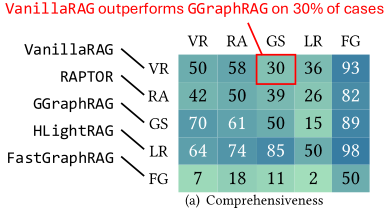
其中，Ψ ∈ R 1 × 𝑐 中的每个条目表示一个文本块（chunk）的聚合关系得分。基于 Ψ，选取得分最高的 top𝑘 个文本块用于检索。
此外，Community 类型下还有两个算子：❶ Entity，以及 ❷ L ayer：
示例 1. 图 39 展示了 GGraphRAG 中部分答案的生成与使用方式。考虑一个抽象问题：“人工智能对全球劳动力市场的社会经济影响是什么？”在此示例中，检索到三个社区（community），GGraphRAG 从每个社区生成部分答案。例如，使用第一个社区时，它生成了一个讨论 AI 对就业格局影响的部分答案，该答案获得 85 的相关性得分。随后这些部分答案被聚合，使 GGraphRAG 能够生成最终的综合性回答。
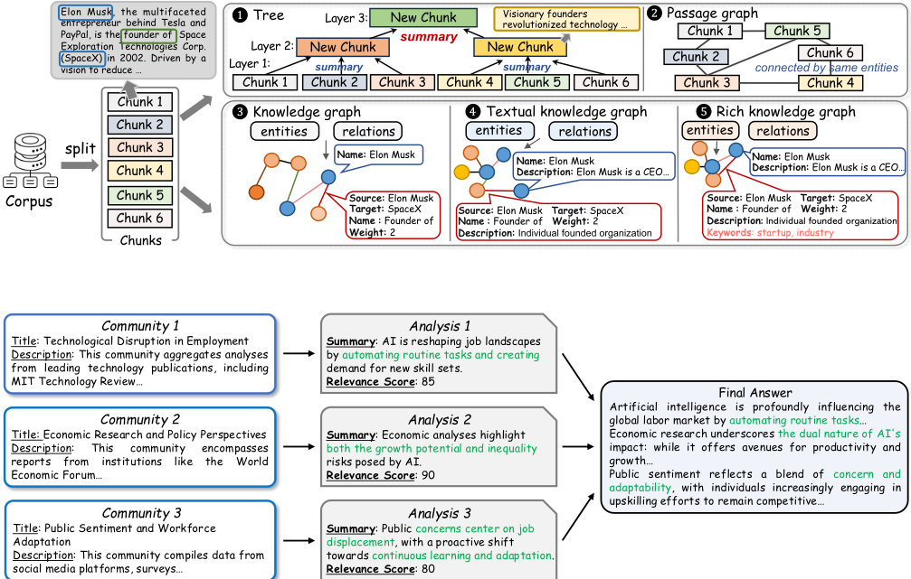
图 39：GGraphRAG 的 Map-Reduce 生成过程示例。该分析展示了从每个社区导出的部分答案，其中被纳入最终答案的部分以绿色突出显示。
1 条证据未在原文中核对到